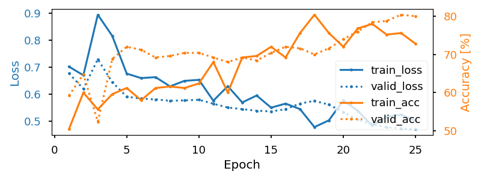
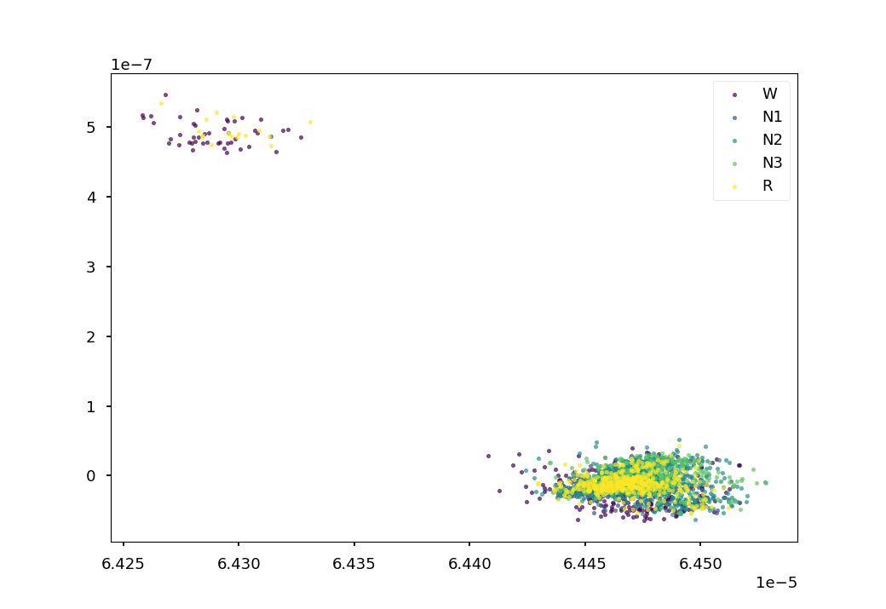

<!DOCTYPE html>
<html class="writer-html5" lang="en" >
<head>
  <meta charset="utf-8">
  
  <meta name="viewport" content="width=device-width, initial-scale=1.0">
  
  <title>Self-supervised learning on EEG with relative positioning &mdash; Braindecode 0.5 documentation</title>
  

  
  <link rel="stylesheet" href="../_static/css/theme.css" type="text/css" />
  <link rel="stylesheet" href="../_static/pygments.css" type="text/css" />
  <link rel="stylesheet" href="../_static/gallery.css" type="text/css" />
  <link rel="stylesheet" href="../_static/gallery-binder.css" type="text/css" />
  <link rel="stylesheet" href="../_static/gallery-dataframe.css" type="text/css" />
  <link rel="stylesheet" href="../_static/gallery-rendered-html.css" type="text/css" />

  
  
  
  

  
  <!--[if lt IE 9]>
    <script src="../_static/js/html5shiv.min.js"></script>
  <![endif]-->
  
    
      <script type="text/javascript" id="documentation_options" data-url_root="../" src="../_static/documentation_options.js"></script>
        <script src="../_static/jquery.js"></script>
        <script src="../_static/underscore.js"></script>
        <script src="../_static/doctools.js"></script>
        <script src="../_static/language_data.js"></script>
        <script async="async" src="https://cdnjs.cloudflare.com/ajax/libs/mathjax/2.7.7/latest.js?config=TeX-AMS-MML_HTMLorMML"></script>
    
    <script type="text/javascript" src="../_static/js/theme.js"></script>

    
    <link rel="index" title="Index" href="../genindex.html" />
    <link rel="search" title="Search" href="../search.html" />
    <link rel="next" title="API Reference" href="../api.html" />
    <link rel="prev" title="Benchmarking eager and lazy loading" href="benchmark_lazy_eager_loading.html" /> 
</head>

<body class="wy-body-for-nav">

   
  <div class="wy-grid-for-nav">
    
    <nav data-toggle="wy-nav-shift" class="wy-nav-side">
      <div class="wy-side-scroll">
        <div class="wy-side-nav-search" >
          

          
            <a href="../index.html" class="icon icon-home" alt="Documentation Home"> Braindecode
          

          
          </a>

          
            
            
              <div class="version">
                0.5
              </div>
            
          

          
<div role="search">
  <form id="rtd-search-form" class="wy-form" action="../search.html" method="get">
    <input type="text" name="q" placeholder="Search docs" />
    <input type="hidden" name="check_keywords" value="yes" />
    <input type="hidden" name="area" value="default" />
  </form>
</div>

          
        </div>

        
        <div class="wy-menu wy-menu-vertical" data-spy="affix" role="navigation" aria-label="main navigation">
          
            
            
              
            
            
              <ul>
<li class="toctree-l1"><a class="reference internal" href="plot_bcic_iv_2a_moabb_trial.html"> Basic trialwise decoding</a></li>
<li class="toctree-l1"><a class="reference internal" href="plot_bcic_iv_2a_moabb_cropped.html"> More data-efficient &quot;cropped decoding&quot;</a></li>
<li class="toctree-l1"><a class="reference internal" href="plot_mne_dataset_example.html"> Your own datasets through MNE</a></li>
<li class="toctree-l1"><a class="reference internal" href="plot_custom_dataset_example.html"> Your own datasets through Numpy</a></li>
</ul>
<ul class="current">
<li class="toctree-l1 current"><a class="reference internal" href="index.html">Braindecode examples</a><ul class="current">
<li class="toctree-l2"><a class="reference internal" href="plot_split_dataset.html">Split Dataset Example</a></li>
<li class="toctree-l2"><a class="reference internal" href="plot_custom_dataset_example.html">Custom Dataset Example</a></li>
<li class="toctree-l2"><a class="reference internal" href="plot_mne_dataset_example.html">MNE Dataset Example</a></li>
<li class="toctree-l2"><a class="reference internal" href="plot_dataset_example.html">MOABB Dataset Example</a></li>
<li class="toctree-l2"><a class="reference internal" href="plot_regression.html">Regression example on fake data</a></li>
<li class="toctree-l2"><a class="reference internal" href="plot_sleep_staging.html">Sleep staging on the Sleep Physionet dataset</a></li>
<li class="toctree-l2"><a class="reference internal" href="plot_bcic_iv_2a_moabb_trial.html">Trialwise Decoding on BCIC IV 2a Dataset</a></li>
<li class="toctree-l2"><a class="reference internal" href="plot_bcic_iv_2a_moabb_cropped.html">Cropped Decoding on BCIC IV 2a Dataset</a></li>
<li class="toctree-l2"><a class="reference internal" href="benchmark_lazy_eager_loading.html">Benchmarking eager and lazy loading</a></li>
<li class="toctree-l2 current"><a class="current reference internal" href="#">Self-supervised learning on EEG with relative positioning</a><ul>
<li class="toctree-l3"><a class="reference internal" href="#loading-and-preprocessing-the-dataset">Loading and preprocessing the dataset</a><ul>
<li class="toctree-l4"><a class="reference internal" href="#loading-the-raw-recordings">Loading the raw recordings</a></li>
<li class="toctree-l4"><a class="reference internal" href="#preprocessing">Preprocessing</a></li>
<li class="toctree-l4"><a class="reference internal" href="#extracting-windows">Extracting windows</a></li>
<li class="toctree-l4"><a class="reference internal" href="#preprocessing-windows">Preprocessing windows</a></li>
<li class="toctree-l4"><a class="reference internal" href="#splitting-dataset-into-train-valid-and-test-sets">Splitting dataset into train, valid and test sets</a></li>
<li class="toctree-l4"><a class="reference internal" href="#creating-samplers">Creating samplers</a></li>
</ul>
</li>
<li class="toctree-l3"><a class="reference internal" href="#creating-the-model">Creating the model</a></li>
<li class="toctree-l3"><a class="reference internal" href="#training">Training</a></li>
<li class="toctree-l3"><a class="reference internal" href="#visualizing-the-results">Visualizing the results</a><ul>
<li class="toctree-l4"><a class="reference internal" href="#inspecting-pretext-task-performance">Inspecting pretext task performance</a></li>
<li class="toctree-l4"><a class="reference internal" href="#using-the-learned-representation-for-sleep-staging">Using the learned representation for sleep staging</a></li>
</ul>
</li>
<li class="toctree-l3"><a class="reference internal" href="#conclusion">Conclusion</a></li>
<li class="toctree-l3"><a class="reference internal" href="#references">References</a></li>
</ul>
</li>
</ul>
</li>
</ul>
<ul>
<li class="toctree-l1"><a class="reference internal" href="../api.html">API Reference</a></li>
</ul>

            
          
        </div>
        
      </div>
    </nav>

    <section data-toggle="wy-nav-shift" class="wy-nav-content-wrap">

      
      <nav class="wy-nav-top" aria-label="top navigation">
        
          <i data-toggle="wy-nav-top" class="fa fa-bars"></i>
          <a href="../index.html">Braindecode</a>
        
      </nav>


      <div class="wy-nav-content">
        
        <div class="rst-content">
        
          


<div role="navigation" aria-label="breadcrumbs navigation">

  <ul class="wy-breadcrumbs">
    
      <li><a href="../index.html" class="icon icon-home"></a> &raquo;</li>
        
          <li><a href="index.html">Braindecode examples</a> &raquo;</li>
        
      <li>Self-supervised learning on EEG with relative positioning</li>
    
    
      <li class="wy-breadcrumbs-aside">
        
            
            <a href="../_sources/auto_examples/plot_relative_positioning.rst.txt" rel="nofollow"> View page source</a>
          
        
      </li>
    
  </ul>

  
  <hr/>
</div>
          <div role="main" class="document" itemscope="itemscope" itemtype="http://schema.org/Article">
           <div itemprop="articleBody">
            
  <div class="sphx-glr-download-link-note admonition note">
<p class="admonition-title">Note</p>
<p>Click <a class="reference internal" href="#sphx-glr-download-auto-examples-plot-relative-positioning-py"><span class="std std-ref">here</span></a>
to download the full example code</p>
</div>
<div class="sphx-glr-example-title section" id="self-supervised-learning-on-eeg-with-relative-positioning">
<span id="sphx-glr-auto-examples-plot-relative-positioning-py"></span><h1>Self-supervised learning on EEG with relative positioning<a class="headerlink" href="#self-supervised-learning-on-eeg-with-relative-positioning" title="Permalink to this headline">¶</a></h1>
<p>This example shows how to train a neural network with self-supervision on sleep
EEG data. We follow the relative positioning approach of <a class="footnote-reference brackets" href="#id15" id="id1">1</a> on the openly
accessible Sleep Physionet dataset <a class="footnote-reference brackets" href="#id16" id="id2">2</a> <a class="footnote-reference brackets" href="#id17" id="id3">3</a>.</p>
<div class="topic">
<p class="topic-title">Self-supervised learning</p>
<p>Self-supervised learning (SSL) is a learning paradigm that leverages
unlabelled data to train neural networks. First, neural networks are
trained on a “pretext task” which uses unlabelled data only. The pretext
task is designed based on a prior understanding of the data under study
(e.g., EEG has an underlying autocorrelation struture) and such that the
processing required to perform well on this pretext task is related to the
processing required to perform well on another task of interest.
Once trained, these neural networks can be reused as feature extractors or
weight initialization in a “downstream task”, which is the task that we are
actually interested in (e.g., sleep staging). The pretext task step can
help reduce the quantity of labelled data needed to perform well on the
downstream task and/or improve downstream performance as compared to a
strictly supervised approach <a class="footnote-reference brackets" href="#id15" id="id4">1</a>.</p>
</div>
<p>Here, we use relative positioning (RP) as our pretext task, and perform sleep
staging as our downstream task. RP is a simple SSL task, in which a neural
network is trained to predict whether two randomly sampled EEG windows are
close or far apart in time. This method was shown to yield physiologically- and
clinically-relevant features and to boost classification performance in
low-labels data regimes <a class="footnote-reference brackets" href="#id15" id="id5">1</a>.</p>
<div class="contents local topic" id="this-example-covers">
<p class="topic-title">This example covers:</p>
<ul class="simple">
<li><p><a class="reference internal" href="#loading-and-preprocessing-the-dataset" id="id19">Loading and preprocessing the dataset</a></p>
<ul>
<li><p><a class="reference internal" href="#loading-the-raw-recordings" id="id20">Loading the raw recordings</a></p></li>
<li><p><a class="reference internal" href="#preprocessing" id="id21">Preprocessing</a></p></li>
<li><p><a class="reference internal" href="#extracting-windows" id="id22">Extracting windows</a></p></li>
<li><p><a class="reference internal" href="#preprocessing-windows" id="id23">Preprocessing windows</a></p></li>
<li><p><a class="reference internal" href="#splitting-dataset-into-train-valid-and-test-sets" id="id24">Splitting dataset into train, valid and test sets</a></p></li>
<li><p><a class="reference internal" href="#creating-samplers" id="id25">Creating samplers</a></p></li>
</ul>
</li>
<li><p><a class="reference internal" href="#creating-the-model" id="id26">Creating the model</a></p></li>
<li><p><a class="reference internal" href="#training" id="id27">Training</a></p></li>
<li><p><a class="reference internal" href="#visualizing-the-results" id="id28">Visualizing the results</a></p>
<ul>
<li><p><a class="reference internal" href="#inspecting-pretext-task-performance" id="id29">Inspecting pretext task performance</a></p></li>
<li><p><a class="reference internal" href="#using-the-learned-representation-for-sleep-staging" id="id30">Using the learned representation for sleep staging</a></p></li>
</ul>
</li>
<li><p><a class="reference internal" href="#conclusion" id="id31">Conclusion</a></p></li>
<li><p><a class="reference internal" href="#references" id="id32">References</a></p></li>
</ul>
</div>
<div class="highlight-default notranslate"><div class="highlight"><pre><span></span><span class="c1"># Authors: Hubert Banville &lt;hubert.jbanville@gmail.com&gt;</span>
<span class="c1">#</span>
<span class="c1"># License: BSD (3-clause)</span>


<a href="https://docs.python.org/3/library/functions.html#int" title="builtins.int" class="sphx-glr-backref-module-builtins sphx-glr-backref-type-py-class sphx-glr-backref-instance"><span class="n">random_state</span></a> <span class="o">=</span> <span class="mi">87</span>
<a href="https://docs.python.org/3/library/functions.html#int" title="builtins.int" class="sphx-glr-backref-module-builtins sphx-glr-backref-type-py-class sphx-glr-backref-instance"><span class="n">n_jobs</span></a> <span class="o">=</span> <span class="mi">1</span>
</pre></div>
</div>
<div class="section" id="loading-and-preprocessing-the-dataset">
<h2><a class="toc-backref" href="#id19">Loading and preprocessing the dataset</a><a class="headerlink" href="#loading-and-preprocessing-the-dataset" title="Permalink to this headline">¶</a></h2>
<div class="section" id="loading-the-raw-recordings">
<h3><a class="toc-backref" href="#id20">Loading the raw recordings</a><a class="headerlink" href="#loading-the-raw-recordings" title="Permalink to this headline">¶</a></h3>
<p>First, we load a few recordings from the Sleep Physionet dataset. Running
this example with more recordings should yield better representations and
downstream classification performance.</p>
<div class="highlight-default notranslate"><div class="highlight"><pre><span></span><span class="kn">from</span> <span class="nn">braindecode.datasets.sleep_physionet</span> <span class="kn">import</span> <a href="../generated/braindecode.datasets.BaseConcatDataset.html#braindecode.datasets.BaseConcatDataset" title="braindecode.datasets.BaseConcatDataset" class="sphx-glr-backref-module-braindecode-datasets sphx-glr-backref-type-py-class"><span class="n">SleepPhysionet</span></a>

<span class="n">dataset</span> <span class="o">=</span> <a href="../generated/braindecode.datasets.BaseConcatDataset.html#braindecode.datasets.BaseConcatDataset" title="braindecode.datasets.BaseConcatDataset" class="sphx-glr-backref-module-braindecode-datasets sphx-glr-backref-type-py-class"><span class="n">SleepPhysionet</span></a><span class="p">(</span>
    <span class="n">subject_ids</span><span class="o">=</span><span class="p">[</span><span class="mi">0</span><span class="p">,</span> <span class="mi">1</span><span class="p">,</span> <span class="mi">2</span><span class="p">],</span> <span class="n">recording_ids</span><span class="o">=</span><span class="p">[</span><span class="mi">1</span><span class="p">],</span> <span class="n">crop_wake_mins</span><span class="o">=</span><span class="mi">30</span><span class="p">)</span>
</pre></div>
</div>
<p class="sphx-glr-script-out">Out:</p>
<div class="sphx-glr-script-out highlight-none notranslate"><div class="highlight"><pre><span></span>Using default location ~/mne_data for PHYSIONET_SLEEP...
Downloading https://physionet.org/physiobank/database/sleep-edfx/sleep-cassette//SC4021E0-PSG.edf (48.8 MB)

  0%|          | Downloading : 0.00/48.8M [00:00&lt;?,        ?B/s]
  0%|          | Downloading : 88.0k/48.8M [00:00&lt;00:12,    3.94MB/s]
  1%|          | Downloading : 344k/48.8M [00:00&lt;00:12,    4.05MB/s]
  1%|          | Downloading : 472k/48.8M [00:00&lt;00:12,    4.11MB/s]
  1%|1         | Downloading : 600k/48.8M [00:00&lt;00:12,    4.18MB/s]
  2%|1         | Downloading : 856k/48.8M [00:00&lt;00:11,    4.25MB/s]
  2%|1         | Downloading : 984k/48.8M [00:00&lt;00:11,    4.31MB/s]
  2%|2         | Downloading : 1.21M/48.8M [00:00&lt;00:11,    4.38MB/s]
  3%|2         | Downloading : 1.46M/48.8M [00:00&lt;00:11,    4.46MB/s]
  3%|3         | Downloading : 1.59M/48.8M [00:00&lt;00:10,    4.51MB/s]
  4%|3         | Downloading : 1.84M/48.8M [00:00&lt;00:10,    4.60MB/s]
  4%|4         | Downloading : 1.96M/48.8M [00:00&lt;00:10,    4.70MB/s]
  4%|4         | Downloading : 2.09M/48.8M [00:00&lt;00:10,    4.75MB/s]
  5%|4         | Downloading : 2.34M/48.8M [00:00&lt;00:10,    4.82MB/s]
  5%|5         | Downloading : 2.59M/48.8M [00:00&lt;00:09,    4.90MB/s]
  6%|5         | Downloading : 2.71M/48.8M [00:00&lt;00:09,    4.98MB/s]
  6%|5         | Downloading : 2.84M/48.8M [00:00&lt;00:09,    4.95MB/s]
  6%|6         | Downloading : 2.96M/48.8M [00:00&lt;00:09,    4.96MB/s]
  6%|6         | Downloading : 3.09M/48.8M [00:00&lt;00:09,    4.98MB/s]
  7%|6         | Downloading : 3.21M/48.8M [00:00&lt;00:09,    5.05MB/s]
  7%|6         | Downloading : 3.34M/48.8M [00:00&lt;00:09,    5.07MB/s]
  7%|7         | Downloading : 3.46M/48.8M [00:00&lt;00:09,    5.13MB/s]
  7%|7         | Downloading : 3.59M/48.8M [00:00&lt;00:09,    5.14MB/s]
  8%|7         | Downloading : 3.71M/48.8M [00:00&lt;00:09,    5.16MB/s]
  8%|7         | Downloading : 3.84M/48.8M [00:00&lt;00:09,    5.17MB/s]
  8%|8         | Downloading : 3.96M/48.8M [00:00&lt;00:08,    5.24MB/s]
  8%|8         | Downloading : 4.09M/48.8M [00:00&lt;00:08,    5.29MB/s]
  9%|8         | Downloading : 4.21M/48.8M [00:00&lt;00:08,    5.30MB/s]
  9%|8         | Downloading : 4.34M/48.8M [00:00&lt;00:08,    5.37MB/s]
  9%|9         | Downloading : 4.46M/48.8M [00:00&lt;00:08,    5.42MB/s]
  9%|9         | Downloading : 4.59M/48.8M [00:00&lt;00:08,    5.50MB/s]
 10%|9         | Downloading : 4.71M/48.8M [00:00&lt;00:08,    5.54MB/s]
 10%|9         | Downloading : 4.84M/48.8M [00:00&lt;00:08,    5.54MB/s]
 10%|#         | Downloading : 4.96M/48.8M [00:00&lt;00:08,    5.62MB/s]
 10%|#         | Downloading : 5.09M/48.8M [00:00&lt;00:08,    5.66MB/s]
 11%|#         | Downloading : 5.21M/48.8M [00:00&lt;00:07,    5.73MB/s]
 11%|#         | Downloading : 5.34M/48.8M [00:00&lt;00:07,    5.78MB/s]
 11%|#1        | Downloading : 5.59M/48.8M [00:00&lt;00:07,    5.87MB/s]
 12%|#1        | Downloading : 5.71M/48.8M [00:00&lt;00:07,    5.90MB/s]
 12%|#1        | Downloading : 5.84M/48.8M [00:00&lt;00:07,    5.98MB/s]
 12%|#2        | Downloading : 5.96M/48.8M [00:00&lt;00:07,    6.00MB/s]
 13%|#2        | Downloading : 6.21M/48.8M [00:01&lt;00:07,    6.04MB/s]
 13%|#3        | Downloading : 6.46M/48.8M [00:01&lt;00:07,    6.15MB/s]
 14%|#3        | Downloading : 6.59M/48.8M [00:01&lt;00:07,    6.14MB/s]
 14%|#4        | Downloading : 6.84M/48.8M [00:01&lt;00:07,    6.25MB/s]
 14%|#4        | Downloading : 6.96M/48.8M [00:01&lt;00:07,    6.23MB/s]
 15%|#4        | Downloading : 7.09M/48.8M [00:01&lt;00:07,    6.21MB/s]
 15%|#4        | Downloading : 7.21M/48.8M [00:01&lt;00:06,    6.26MB/s]
 15%|#5        | Downloading : 7.34M/48.8M [00:01&lt;00:06,    6.23MB/s]
 15%|#5        | Downloading : 7.46M/48.8M [00:01&lt;00:07,    6.19MB/s]
 16%|#5        | Downloading : 7.59M/48.8M [00:01&lt;00:07,    6.16MB/s]
 16%|#5        | Downloading : 7.71M/48.8M [00:01&lt;00:07,    6.13MB/s]
 16%|#6        | Downloading : 7.84M/48.8M [00:01&lt;00:06,    6.19MB/s]
 16%|#6        | Downloading : 7.96M/48.8M [00:01&lt;00:06,    6.17MB/s]
 17%|#6        | Downloading : 8.21M/48.8M [00:01&lt;00:06,    6.20MB/s]
 17%|#7        | Downloading : 8.34M/48.8M [00:01&lt;00:06,    6.19MB/s]
 17%|#7        | Downloading : 8.46M/48.8M [00:01&lt;00:06,    6.25MB/s]
 18%|#7        | Downloading : 8.59M/48.8M [00:01&lt;00:06,    6.11MB/s]
 18%|#7        | Downloading : 8.71M/48.8M [00:01&lt;00:06,    6.03MB/s]
 18%|#8        | Downloading : 8.84M/48.8M [00:01&lt;00:07,    5.97MB/s]
 18%|#8        | Downloading : 8.96M/48.8M [00:01&lt;00:07,    5.92MB/s]
 19%|#8        | Downloading : 9.09M/48.8M [00:01&lt;00:07,    5.87MB/s]
 19%|#8        | Downloading : 9.21M/48.8M [00:01&lt;00:07,    5.84MB/s]
 19%|#9        | Downloading : 9.34M/48.8M [00:01&lt;00:07,    5.81MB/s]
 19%|#9        | Downloading : 9.46M/48.8M [00:01&lt;00:07,    5.77MB/s]
 20%|#9        | Downloading : 9.59M/48.8M [00:01&lt;00:07,    5.76MB/s]
 20%|#9        | Downloading : 9.71M/48.8M [00:01&lt;00:07,    5.74MB/s]
 20%|##        | Downloading : 9.84M/48.8M [00:01&lt;00:07,    5.74MB/s]
 20%|##        | Downloading : 9.96M/48.8M [00:01&lt;00:07,    5.73MB/s]
 21%|##        | Downloading : 10.1M/48.8M [00:01&lt;00:07,    5.71MB/s]
 21%|##        | Downloading : 10.2M/48.8M [00:01&lt;00:06,    5.78MB/s]
 21%|##1       | Downloading : 10.3M/48.8M [00:01&lt;00:06,    5.78MB/s]
 21%|##1       | Downloading : 10.5M/48.8M [00:01&lt;00:06,    5.78MB/s]
 22%|##1       | Downloading : 10.6M/48.8M [00:01&lt;00:06,    5.86MB/s]
 22%|##1       | Downloading : 10.7M/48.8M [00:01&lt;00:06,    5.85MB/s]
 22%|##2       | Downloading : 10.8M/48.8M [00:01&lt;00:06,    5.86MB/s]
 22%|##2       | Downloading : 11.0M/48.8M [00:01&lt;00:06,    5.93MB/s]
 23%|##2       | Downloading : 11.1M/48.8M [00:01&lt;00:06,    5.94MB/s]
 23%|##2       | Downloading : 11.2M/48.8M [00:01&lt;00:06,    5.96MB/s]
 23%|##3       | Downloading : 11.3M/48.8M [00:01&lt;00:06,    6.00MB/s]
 23%|##3       | Downloading : 11.5M/48.8M [00:01&lt;00:06,    6.06MB/s]
 24%|##3       | Downloading : 11.6M/48.8M [00:01&lt;00:06,    6.09MB/s]
 24%|##4       | Downloading : 11.7M/48.8M [00:01&lt;00:06,    6.15MB/s]
 24%|##4       | Downloading : 11.8M/48.8M [00:01&lt;00:06,    6.20MB/s]
 25%|##4       | Downloading : 12.0M/48.8M [00:01&lt;00:06,    6.23MB/s]
 25%|##4       | Downloading : 12.1M/48.8M [00:01&lt;00:06,    6.28MB/s]
 25%|##5       | Downloading : 12.2M/48.8M [00:02&lt;00:06,    6.35MB/s]
 25%|##5       | Downloading : 12.3M/48.8M [00:02&lt;00:05,    6.38MB/s]
 26%|##5       | Downloading : 12.6M/48.8M [00:02&lt;00:05,    6.44MB/s]
 26%|##6       | Downloading : 12.7M/48.8M [00:02&lt;00:05,    6.48MB/s]
 27%|##6       | Downloading : 13.0M/48.8M [00:02&lt;00:05,    6.55MB/s]
 27%|##6       | Downloading : 13.1M/48.8M [00:02&lt;00:05,    6.59MB/s]
 27%|##7       | Downloading : 13.3M/48.8M [00:02&lt;00:05,    6.63MB/s]
 28%|##7       | Downloading : 13.6M/48.8M [00:02&lt;00:05,    6.73MB/s]
 28%|##8       | Downloading : 13.7M/48.8M [00:02&lt;00:05,    6.71MB/s]
 29%|##8       | Downloading : 14.0M/48.8M [00:02&lt;00:05,    6.81MB/s]
 29%|##9       | Downloading : 14.2M/48.8M [00:02&lt;00:05,    6.89MB/s]
 29%|##9       | Downloading : 14.3M/48.8M [00:02&lt;00:05,    6.90MB/s]
 30%|##9       | Downloading : 14.6M/48.8M [00:02&lt;00:05,    6.99MB/s]
 30%|###       | Downloading : 14.8M/48.8M [00:02&lt;00:05,    7.11MB/s]
 31%|###       | Downloading : 15.0M/48.8M [00:02&lt;00:04,    7.13MB/s]
 31%|###1      | Downloading : 15.2M/48.8M [00:02&lt;00:04,    7.19MB/s]
 32%|###1      | Downloading : 15.5M/48.8M [00:02&lt;00:04,    7.29MB/s]
 32%|###2      | Downloading : 15.7M/48.8M [00:02&lt;00:04,    7.40MB/s]
 32%|###2      | Downloading : 15.8M/48.8M [00:02&lt;00:04,    7.30MB/s]
 33%|###2      | Downloading : 16.1M/48.8M [00:02&lt;00:04,    7.34MB/s]
 33%|###3      | Downloading : 16.2M/48.8M [00:02&lt;00:04,    7.32MB/s]
 33%|###3      | Downloading : 16.3M/48.8M [00:02&lt;00:04,    7.29MB/s]
 34%|###3      | Downloading : 16.5M/48.8M [00:02&lt;00:04,    7.29MB/s]
 34%|###4      | Downloading : 16.6M/48.8M [00:02&lt;00:04,    7.27MB/s]
 34%|###4      | Downloading : 16.7M/48.8M [00:02&lt;00:04,    7.27MB/s]
 35%|###4      | Downloading : 16.8M/48.8M [00:02&lt;00:04,    7.23MB/s]
 35%|###4      | Downloading : 17.0M/48.8M [00:02&lt;00:04,    7.26MB/s]
 35%|###5      | Downloading : 17.1M/48.8M [00:02&lt;00:04,    7.22MB/s]
 35%|###5      | Downloading : 17.2M/48.8M [00:02&lt;00:04,    7.25MB/s]
 36%|###5      | Downloading : 17.5M/48.8M [00:02&lt;00:04,    7.25MB/s]
 36%|###6      | Downloading : 17.7M/48.8M [00:02&lt;00:04,    7.27MB/s]
 37%|###6      | Downloading : 18.0M/48.8M [00:02&lt;00:04,    7.33MB/s]
 37%|###7      | Downloading : 18.1M/48.8M [00:02&lt;00:04,    7.28MB/s]
 38%|###7      | Downloading : 18.3M/48.8M [00:02&lt;00:04,    7.36MB/s]
 38%|###7      | Downloading : 18.5M/48.8M [00:02&lt;00:04,    7.30MB/s]
 38%|###8      | Downloading : 18.7M/48.8M [00:02&lt;00:04,    7.38MB/s]
 39%|###8      | Downloading : 19.0M/48.8M [00:02&lt;00:04,    7.39MB/s]
 39%|###9      | Downloading : 19.2M/48.8M [00:02&lt;00:04,    7.47MB/s]
 40%|###9      | Downloading : 19.5M/48.8M [00:02&lt;00:04,    7.50MB/s]
 40%|####      | Downloading : 19.7M/48.8M [00:02&lt;00:04,    7.57MB/s]
 41%|####      | Downloading : 20.0M/48.8M [00:03&lt;00:03,    7.66MB/s]
 41%|####1     | Downloading : 20.2M/48.8M [00:03&lt;00:03,    7.75MB/s]
 42%|####1     | Downloading : 20.3M/48.8M [00:03&lt;00:03,    7.69MB/s]
 42%|####2     | Downloading : 20.6M/48.8M [00:03&lt;00:03,    7.76MB/s]
 42%|####2     | Downloading : 20.7M/48.8M [00:03&lt;00:03,    7.69MB/s]
 43%|####3     | Downloading : 21.1M/48.8M [00:03&lt;00:03,    7.69MB/s]
 44%|####3     | Downloading : 21.3M/48.8M [00:03&lt;00:03,    7.62MB/s]
 44%|####4     | Downloading : 21.6M/48.8M [00:03&lt;00:03,    7.48MB/s]
 45%|####4     | Downloading : 21.8M/48.8M [00:03&lt;00:03,    7.43MB/s]
 45%|####5     | Downloading : 22.1M/48.8M [00:03&lt;00:03,    7.22MB/s]
 46%|####5     | Downloading : 22.3M/48.8M [00:03&lt;00:03,    7.09MB/s]
 46%|####6     | Downloading : 22.6M/48.8M [00:03&lt;00:03,    6.98MB/s]
 47%|####6     | Downloading : 22.8M/48.8M [00:03&lt;00:03,    6.93MB/s]
 47%|####7     | Downloading : 23.1M/48.8M [00:03&lt;00:03,    6.87MB/s]
 48%|####7     | Downloading : 23.3M/48.8M [00:03&lt;00:03,    6.78MB/s]
 48%|####8     | Downloading : 23.6M/48.8M [00:03&lt;00:03,    6.78MB/s]
 49%|####8     | Downloading : 23.8M/48.8M [00:03&lt;00:03,    6.76MB/s]
 49%|####9     | Downloading : 24.1M/48.8M [00:03&lt;00:03,    6.76MB/s]
 50%|####9     | Downloading : 24.3M/48.8M [00:03&lt;00:03,    6.77MB/s]
 50%|#####     | Downloading : 24.6M/48.8M [00:03&lt;00:03,    6.78MB/s]
 51%|#####     | Downloading : 24.8M/48.8M [00:03&lt;00:03,    6.80MB/s]
 51%|#####1    | Downloading : 25.1M/48.8M [00:03&lt;00:03,    6.83MB/s]
 52%|#####1    | Downloading : 25.3M/48.8M [00:03&lt;00:03,    6.84MB/s]
 52%|#####2    | Downloading : 25.6M/48.8M [00:03&lt;00:03,    6.87MB/s]
 53%|#####2    | Downloading : 25.8M/48.8M [00:03&lt;00:03,    6.92MB/s]
 53%|#####3    | Downloading : 26.1M/48.8M [00:03&lt;00:03,    6.98MB/s]
 54%|#####3    | Downloading : 26.3M/48.8M [00:04&lt;00:03,    7.00MB/s]
 55%|#####4    | Downloading : 26.6M/48.8M [00:04&lt;00:03,    7.10MB/s]
 55%|#####5    | Downloading : 26.8M/48.8M [00:04&lt;00:03,    7.11MB/s]
 56%|#####5    | Downloading : 27.1M/48.8M [00:04&lt;00:03,    7.21MB/s]
 56%|#####6    | Downloading : 27.3M/48.8M [00:04&lt;00:03,    7.23MB/s]
 57%|#####6    | Downloading : 27.6M/48.8M [00:04&lt;00:03,    7.32MB/s]
 57%|#####7    | Downloading : 27.8M/48.8M [00:04&lt;00:02,    7.38MB/s]
 58%|#####7    | Downloading : 28.1M/48.8M [00:04&lt;00:02,    7.43MB/s]
 58%|#####8    | Downloading : 28.3M/48.8M [00:04&lt;00:02,    7.54MB/s]
 59%|#####8    | Downloading : 28.6M/48.8M [00:04&lt;00:02,    7.60MB/s]
 59%|#####9    | Downloading : 28.8M/48.8M [00:04&lt;00:02,    7.69MB/s]
 60%|#####9    | Downloading : 29.1M/48.8M [00:04&lt;00:02,    7.74MB/s]
 60%|######    | Downloading : 29.3M/48.8M [00:04&lt;00:02,    7.84MB/s]
 61%|######    | Downloading : 29.6M/48.8M [00:04&lt;00:02,    7.93MB/s]
 61%|######1   | Downloading : 29.8M/48.8M [00:04&lt;00:02,    8.02MB/s]
 62%|######1   | Downloading : 30.1M/48.8M [00:04&lt;00:02,    8.07MB/s]
 62%|######2   | Downloading : 30.3M/48.8M [00:04&lt;00:02,    8.16MB/s]
 63%|######2   | Downloading : 30.6M/48.8M [00:04&lt;00:02,    8.10MB/s]
 63%|######3   | Downloading : 30.8M/48.8M [00:04&lt;00:02,    8.04MB/s]
 64%|######3   | Downloading : 31.1M/48.8M [00:04&lt;00:02,    8.04MB/s]
 64%|######4   | Downloading : 31.3M/48.8M [00:04&lt;00:02,    7.99MB/s]
 65%|######4   | Downloading : 31.6M/48.8M [00:04&lt;00:02,    7.97MB/s]
 65%|######5   | Downloading : 31.8M/48.8M [00:04&lt;00:02,    7.94MB/s]
 66%|######5   | Downloading : 32.1M/48.8M [00:04&lt;00:02,    7.98MB/s]
 66%|######6   | Downloading : 32.3M/48.8M [00:04&lt;00:02,    7.95MB/s]
 67%|######6   | Downloading : 32.6M/48.8M [00:04&lt;00:02,    7.98MB/s]
 67%|######7   | Downloading : 32.8M/48.8M [00:04&lt;00:02,    7.93MB/s]
 68%|######7   | Downloading : 33.1M/48.8M [00:04&lt;00:02,    7.84MB/s]
 68%|######8   | Downloading : 33.3M/48.8M [00:04&lt;00:02,    7.69MB/s]
 69%|######8   | Downloading : 33.6M/48.8M [00:04&lt;00:02,    7.65MB/s]
 69%|######9   | Downloading : 33.8M/48.8M [00:04&lt;00:02,    7.54MB/s]
 70%|######9   | Downloading : 34.1M/48.8M [00:05&lt;00:02,    7.51MB/s]
 70%|#######   | Downloading : 34.3M/48.8M [00:05&lt;00:02,    7.48MB/s]
 71%|#######   | Downloading : 34.6M/48.8M [00:05&lt;00:01,    7.46MB/s]
 71%|#######1  | Downloading : 34.8M/48.8M [00:05&lt;00:01,    7.43MB/s]
 72%|#######1  | Downloading : 35.1M/48.8M [00:05&lt;00:01,    7.43MB/s]
 72%|#######2  | Downloading : 35.3M/48.8M [00:05&lt;00:01,    7.42MB/s]
 73%|#######2  | Downloading : 35.6M/48.8M [00:05&lt;00:01,    7.47MB/s]
 73%|#######3  | Downloading : 35.8M/48.8M [00:05&lt;00:01,    7.47MB/s]
 74%|#######3  | Downloading : 36.1M/48.8M [00:05&lt;00:01,    7.49MB/s]
 74%|#######4  | Downloading : 36.3M/48.8M [00:05&lt;00:01,    7.40MB/s]
 75%|#######5  | Downloading : 36.6M/48.8M [00:05&lt;00:01,    7.42MB/s]
 76%|#######5  | Downloading : 36.8M/48.8M [00:05&lt;00:01,    7.31MB/s]
 76%|#######6  | Downloading : 37.1M/48.8M [00:05&lt;00:01,    7.24MB/s]
 77%|#######6  | Downloading : 37.3M/48.8M [00:05&lt;00:01,    7.17MB/s]
 77%|#######7  | Downloading : 37.6M/48.8M [00:05&lt;00:01,    7.13MB/s]
 78%|#######7  | Downloading : 37.8M/48.8M [00:05&lt;00:01,    7.03MB/s]
 78%|#######8  | Downloading : 38.1M/48.8M [00:05&lt;00:01,    6.87MB/s]
 79%|#######8  | Downloading : 38.3M/48.8M [00:05&lt;00:01,    6.73MB/s]
 79%|#######9  | Downloading : 38.6M/48.8M [00:05&lt;00:01,    6.63MB/s]
 80%|#######9  | Downloading : 38.8M/48.8M [00:05&lt;00:01,    6.55MB/s]
 80%|########  | Downloading : 39.1M/48.8M [00:05&lt;00:01,    6.50MB/s]
 81%|########  | Downloading : 39.3M/48.8M [00:05&lt;00:01,    6.46MB/s]
 81%|########1 | Downloading : 39.6M/48.8M [00:05&lt;00:01,    6.26MB/s]
 82%|########1 | Downloading : 39.8M/48.8M [00:06&lt;00:01,    6.14MB/s]
 82%|########2 | Downloading : 40.1M/48.8M [00:06&lt;00:01,    6.05MB/s]
 83%|########2 | Downloading : 40.3M/48.8M [00:06&lt;00:01,    5.97MB/s]
 83%|########3 | Downloading : 40.6M/48.8M [00:06&lt;00:01,    5.93MB/s]
 84%|########3 | Downloading : 40.8M/48.8M [00:06&lt;00:01,    5.93MB/s]
 84%|########4 | Downloading : 41.1M/48.8M [00:06&lt;00:01,    5.90MB/s]
 85%|########4 | Downloading : 41.3M/48.8M [00:06&lt;00:01,    5.88MB/s]
 85%|########5 | Downloading : 41.6M/48.8M [00:06&lt;00:01,    5.91MB/s]
 86%|########5 | Downloading : 41.8M/48.8M [00:06&lt;00:01,    5.92MB/s]
 86%|########6 | Downloading : 42.1M/48.8M [00:06&lt;00:01,    5.94MB/s]
 87%|########6 | Downloading : 42.3M/48.8M [00:06&lt;00:01,    5.97MB/s]
 87%|########7 | Downloading : 42.6M/48.8M [00:06&lt;00:01,    6.02MB/s]
 88%|########7 | Downloading : 42.8M/48.8M [00:06&lt;00:01,    6.06MB/s]
 88%|########8 | Downloading : 43.1M/48.8M [00:06&lt;00:00,    6.02MB/s]
 89%|########8 | Downloading : 43.3M/48.8M [00:06&lt;00:00,    6.06MB/s]
 89%|########9 | Downloading : 43.6M/48.8M [00:06&lt;00:00,    6.01MB/s]
 90%|########9 | Downloading : 43.8M/48.8M [00:06&lt;00:00,    5.98MB/s]
 90%|######### | Downloading : 44.1M/48.8M [00:06&lt;00:00,    6.01MB/s]
 91%|######### | Downloading : 44.3M/48.8M [00:06&lt;00:00,    5.97MB/s]
 91%|#########1| Downloading : 44.6M/48.8M [00:06&lt;00:00,    6.01MB/s]
 92%|#########1| Downloading : 44.8M/48.8M [00:06&lt;00:00,    5.98MB/s]
 92%|#########2| Downloading : 45.1M/48.8M [00:06&lt;00:00,    6.02MB/s]
 93%|#########2| Downloading : 45.3M/48.8M [00:07&lt;00:00,    5.98MB/s]
 93%|#########3| Downloading : 45.6M/48.8M [00:07&lt;00:00,    5.94MB/s]
 94%|#########3| Downloading : 45.8M/48.8M [00:07&lt;00:00,    5.91MB/s]
 94%|#########4| Downloading : 46.1M/48.8M [00:07&lt;00:00,    5.87MB/s]
 95%|#########4| Downloading : 46.3M/48.8M [00:07&lt;00:00,    5.84MB/s]
 96%|#########5| Downloading : 46.6M/48.8M [00:07&lt;00:00,    5.82MB/s]
 96%|#########6| Downloading : 46.8M/48.8M [00:07&lt;00:00,    5.85MB/s]
 97%|#########6| Downloading : 47.1M/48.8M [00:07&lt;00:00,    5.82MB/s]
 97%|#########7| Downloading : 47.3M/48.8M [00:07&lt;00:00,    5.71MB/s]
 98%|#########7| Downloading : 47.6M/48.8M [00:07&lt;00:00,    5.63MB/s]
 98%|#########8| Downloading : 47.8M/48.8M [00:07&lt;00:00,    5.48MB/s]
 99%|#########8| Downloading : 48.1M/48.8M [00:07&lt;00:00,    5.33MB/s]
 99%|#########9| Downloading : 48.3M/48.8M [00:07&lt;00:00,    5.22MB/s]
100%|#########9| Downloading : 48.6M/48.8M [00:07&lt;00:00,    5.14MB/s]
100%|##########| Downloading : 48.8M/48.8M [00:07&lt;00:00,    5.07MB/s]
100%|##########| Downloading : 48.8M/48.8M [00:07&lt;00:00,    6.56MB/s]
Verifying hash 8b135afa7fb93bb5f1998fda50355944777c245e.
Downloading https://physionet.org/physiobank/database/sleep-edfx/sleep-cassette//SC4021EH-Hypnogram.edf (5 kB)

  0%|          | Downloading : 0.00/4.69k [00:00&lt;?,        ?B/s]
100%|##########| Downloading : 4.69k/4.69k [00:00&lt;00:00,    11.4MB/s]
Verifying hash 91043cfe46695088b17b6a02937b25efd674c3fb.
Extracting EDF parameters from /home/circleci/mne_data/physionet-sleep-data/SC4001E0-PSG.edf...
EDF file detected
Setting channel info structure...
Creating raw.info structure...
Extracting EDF parameters from /home/circleci/mne_data/physionet-sleep-data/SC4011E0-PSG.edf...
EDF file detected
Setting channel info structure...
Creating raw.info structure...
Extracting EDF parameters from /home/circleci/mne_data/physionet-sleep-data/SC4021E0-PSG.edf...
EDF file detected
Setting channel info structure...
Creating raw.info structure...
</pre></div>
</div>
</div>
<div class="section" id="preprocessing">
<h3><a class="toc-backref" href="#id21">Preprocessing</a><a class="headerlink" href="#preprocessing" title="Permalink to this headline">¶</a></h3>
<p>Next, we preprocess the raw data. We convert the data to microvolts and apply
a lowpass filter. Since the Sleep Physionet data is already sampled at 100 Hz
we don’t need to apply resampling.</p>
<div class="highlight-default notranslate"><div class="highlight"><pre><span></span><span class="kn">from</span> <span class="nn">braindecode.datautil.preprocess</span> <span class="kn">import</span> <span class="p">(</span>
    <span class="n">MNEPreproc</span><span class="p">,</span> <span class="n">NumpyPreproc</span><span class="p">,</span> <span class="n">preprocess</span><span class="p">)</span>

<a href="https://docs.python.org/3/library/functions.html#int" title="builtins.int" class="sphx-glr-backref-module-builtins sphx-glr-backref-type-py-class sphx-glr-backref-instance"><span class="n">high_cut_hz</span></a> <span class="o">=</span> <span class="mi">30</span>

<a href="https://docs.python.org/3/library/stdtypes.html#list" title="builtins.list" class="sphx-glr-backref-module-builtins sphx-glr-backref-type-py-class sphx-glr-backref-instance"><span class="n">preprocessors</span></a> <span class="o">=</span> <span class="p">[</span>
    <span class="c1"># convert from volt to microvolt, directly modifying the numpy array</span>
    <span class="n">NumpyPreproc</span><span class="p">(</span><span class="n">fn</span><span class="o">=</span><span class="k">lambda</span> <span class="n">x</span><span class="p">:</span> <span class="n">x</span> <span class="o">*</span> <span class="mf">1e6</span><span class="p">),</span>
    <span class="c1"># bandpass filter</span>
    <span class="n">MNEPreproc</span><span class="p">(</span><span class="n">fn</span><span class="o">=</span><span class="s1">&#39;filter&#39;</span><span class="p">,</span> <span class="n">l_freq</span><span class="o">=</span><span class="kc">None</span><span class="p">,</span> <span class="n">h_freq</span><span class="o">=</span><a href="https://docs.python.org/3/library/functions.html#int" title="builtins.int" class="sphx-glr-backref-module-builtins sphx-glr-backref-type-py-class sphx-glr-backref-instance"><span class="n">high_cut_hz</span></a><span class="p">,</span> <a href="https://docs.python.org/3/library/functions.html#int" title="builtins.int" class="sphx-glr-backref-module-builtins sphx-glr-backref-type-py-class sphx-glr-backref-instance"><span class="n">n_jobs</span></a><span class="o">=</span><a href="https://docs.python.org/3/library/functions.html#int" title="builtins.int" class="sphx-glr-backref-module-builtins sphx-glr-backref-type-py-class sphx-glr-backref-instance"><span class="n">n_jobs</span></a><span class="p">),</span>
<span class="p">]</span>

<span class="c1"># Transform the data</span>
<span class="n">preprocess</span><span class="p">(</span><span class="n">dataset</span><span class="p">,</span> <a href="https://docs.python.org/3/library/stdtypes.html#list" title="builtins.list" class="sphx-glr-backref-module-builtins sphx-glr-backref-type-py-class sphx-glr-backref-instance"><span class="n">preprocessors</span></a><span class="p">)</span>
</pre></div>
</div>
<p class="sphx-glr-script-out">Out:</p>
<div class="sphx-glr-script-out highlight-none notranslate"><div class="highlight"><pre><span></span>Reading 0 ... 2508000  =      0.000 ... 25080.000 secs...
Filtering raw data in 1 contiguous segment
Setting up low-pass filter at 30 Hz

FIR filter parameters
---------------------
Designing a one-pass, zero-phase, non-causal lowpass filter:
- Windowed time-domain design (firwin) method
- Hamming window with 0.0194 passband ripple and 53 dB stopband attenuation
- Upper passband edge: 30.00 Hz
- Upper transition bandwidth: 7.50 Hz (-6 dB cutoff frequency: 33.75 Hz)
- Filter length: 45 samples (0.450 sec)

Reading 0 ... 3261000  =      0.000 ... 32610.000 secs...
Filtering raw data in 1 contiguous segment
Setting up low-pass filter at 30 Hz

FIR filter parameters
---------------------
Designing a one-pass, zero-phase, non-causal lowpass filter:
- Windowed time-domain design (firwin) method
- Hamming window with 0.0194 passband ripple and 53 dB stopband attenuation
- Upper passband edge: 30.00 Hz
- Upper transition bandwidth: 7.50 Hz (-6 dB cutoff frequency: 33.75 Hz)
- Filter length: 45 samples (0.450 sec)

Reading 0 ... 3060000  =      0.000 ... 30600.000 secs...
Filtering raw data in 1 contiguous segment
Setting up low-pass filter at 30 Hz

FIR filter parameters
---------------------
Designing a one-pass, zero-phase, non-causal lowpass filter:
- Windowed time-domain design (firwin) method
- Hamming window with 0.0194 passband ripple and 53 dB stopband attenuation
- Upper passband edge: 30.00 Hz
- Upper transition bandwidth: 7.50 Hz (-6 dB cutoff frequency: 33.75 Hz)
- Filter length: 45 samples (0.450 sec)
</pre></div>
</div>
</div>
<div class="section" id="extracting-windows">
<h3><a class="toc-backref" href="#id22">Extracting windows</a><a class="headerlink" href="#extracting-windows" title="Permalink to this headline">¶</a></h3>
<p>We extract 30-s windows to be used in both the pretext and downstream tasks.
As RP (and SSL in general) don’t require labelled data, the pretext task
could be performed using unlabelled windows extracted with
<code class="xref py py-func docutils literal notranslate"><span class="pre">braindecode.datautil.windower.create_fixed_length_window()</span></code>.
Here however, purely for convenience, we directly extract labelled windows so
that we can reuse them in the sleep staging downstream task later.</p>
<div class="highlight-default notranslate"><div class="highlight"><pre><span></span><span class="kn">from</span> <span class="nn">braindecode.datautil.windowers</span> <span class="kn">import</span> <a href="../generated/braindecode.datautil.create_windows_from_events.html#braindecode.datautil.create_windows_from_events" title="braindecode.datautil.create_windows_from_events" class="sphx-glr-backref-module-braindecode-datautil sphx-glr-backref-type-py-function"><span class="n">create_windows_from_events</span></a>

<a href="https://docs.python.org/3/library/functions.html#int" title="builtins.int" class="sphx-glr-backref-module-builtins sphx-glr-backref-type-py-class sphx-glr-backref-instance"><span class="n">window_size_s</span></a> <span class="o">=</span> <span class="mi">30</span>
<a href="https://docs.python.org/3/library/functions.html#int" title="builtins.int" class="sphx-glr-backref-module-builtins sphx-glr-backref-type-py-class sphx-glr-backref-instance"><span class="n">sfreq</span></a> <span class="o">=</span> <span class="mi">100</span>
<a href="https://docs.python.org/3/library/functions.html#int" title="builtins.int" class="sphx-glr-backref-module-builtins sphx-glr-backref-type-py-class sphx-glr-backref-instance"><span class="n">window_size_samples</span></a> <span class="o">=</span> <a href="https://docs.python.org/3/library/functions.html#int" title="builtins.int" class="sphx-glr-backref-module-builtins sphx-glr-backref-type-py-class sphx-glr-backref-instance"><span class="n">window_size_s</span></a> <span class="o">*</span> <a href="https://docs.python.org/3/library/functions.html#int" title="builtins.int" class="sphx-glr-backref-module-builtins sphx-glr-backref-type-py-class sphx-glr-backref-instance"><span class="n">sfreq</span></a>

<a href="https://docs.python.org/3/library/stdtypes.html#dict" title="builtins.dict" class="sphx-glr-backref-module-builtins sphx-glr-backref-type-py-class sphx-glr-backref-instance"><span class="n">mapping</span></a> <span class="o">=</span> <span class="p">{</span>  <span class="c1"># We merge stages 3 and 4 following AASM standards.</span>
    <span class="s1">&#39;Sleep stage W&#39;</span><span class="p">:</span> <span class="mi">0</span><span class="p">,</span>
    <span class="s1">&#39;Sleep stage 1&#39;</span><span class="p">:</span> <span class="mi">1</span><span class="p">,</span>
    <span class="s1">&#39;Sleep stage 2&#39;</span><span class="p">:</span> <span class="mi">2</span><span class="p">,</span>
    <span class="s1">&#39;Sleep stage 3&#39;</span><span class="p">:</span> <span class="mi">3</span><span class="p">,</span>
    <span class="s1">&#39;Sleep stage 4&#39;</span><span class="p">:</span> <span class="mi">3</span><span class="p">,</span>
    <span class="s1">&#39;Sleep stage R&#39;</span><span class="p">:</span> <span class="mi">4</span>
<span class="p">}</span>

<a href="../generated/braindecode.datasets.BaseConcatDataset.html#braindecode.datasets.BaseConcatDataset" title="braindecode.datasets.BaseConcatDataset" class="sphx-glr-backref-module-braindecode-datasets sphx-glr-backref-type-py-class sphx-glr-backref-instance"><span class="n">windows_dataset</span></a> <span class="o">=</span> <a href="../generated/braindecode.datautil.create_windows_from_events.html#braindecode.datautil.create_windows_from_events" title="braindecode.datautil.create_windows_from_events" class="sphx-glr-backref-module-braindecode-datautil sphx-glr-backref-type-py-function"><span class="n">create_windows_from_events</span></a><span class="p">(</span>
    <span class="n">dataset</span><span class="p">,</span> <span class="n">trial_start_offset_samples</span><span class="o">=</span><span class="mi">0</span><span class="p">,</span> <span class="n">trial_stop_offset_samples</span><span class="o">=</span><span class="mi">0</span><span class="p">,</span>
    <a href="https://docs.python.org/3/library/functions.html#int" title="builtins.int" class="sphx-glr-backref-module-builtins sphx-glr-backref-type-py-class sphx-glr-backref-instance"><span class="n">window_size_samples</span></a><span class="o">=</span><a href="https://docs.python.org/3/library/functions.html#int" title="builtins.int" class="sphx-glr-backref-module-builtins sphx-glr-backref-type-py-class sphx-glr-backref-instance"><span class="n">window_size_samples</span></a><span class="p">,</span>
    <span class="n">window_stride_samples</span><span class="o">=</span><a href="https://docs.python.org/3/library/functions.html#int" title="builtins.int" class="sphx-glr-backref-module-builtins sphx-glr-backref-type-py-class sphx-glr-backref-instance"><span class="n">window_size_samples</span></a><span class="p">,</span> <span class="n">preload</span><span class="o">=</span><span class="kc">True</span><span class="p">,</span> <a href="https://docs.python.org/3/library/stdtypes.html#dict" title="builtins.dict" class="sphx-glr-backref-module-builtins sphx-glr-backref-type-py-class sphx-glr-backref-instance"><span class="n">mapping</span></a><span class="o">=</span><a href="https://docs.python.org/3/library/stdtypes.html#dict" title="builtins.dict" class="sphx-glr-backref-module-builtins sphx-glr-backref-type-py-class sphx-glr-backref-instance"><span class="n">mapping</span></a><span class="p">)</span>
</pre></div>
</div>
<p class="sphx-glr-script-out">Out:</p>
<div class="sphx-glr-script-out highlight-none notranslate"><div class="highlight"><pre><span></span>Used Annotations descriptions: [&#39;Sleep stage 1&#39;, &#39;Sleep stage 2&#39;, &#39;Sleep stage 3&#39;, &#39;Sleep stage 4&#39;, &#39;Sleep stage R&#39;, &#39;Sleep stage W&#39;]
Adding metadata with 4 columns
Replacing existing metadata with 4 columns
837 matching events found
No baseline correction applied
0 projection items activated
Loading data for 837 events and 3000 original time points ...
0 bad epochs dropped
Used Annotations descriptions: [&#39;Sleep stage 1&#39;, &#39;Sleep stage 2&#39;, &#39;Sleep stage 3&#39;, &#39;Sleep stage 4&#39;, &#39;Sleep stage R&#39;, &#39;Sleep stage W&#39;]
Adding metadata with 4 columns
Replacing existing metadata with 4 columns
1088 matching events found
No baseline correction applied
0 projection items activated
Loading data for 1088 events and 3000 original time points ...
0 bad epochs dropped
Used Annotations descriptions: [&#39;Sleep stage 1&#39;, &#39;Sleep stage 2&#39;, &#39;Sleep stage 3&#39;, &#39;Sleep stage 4&#39;, &#39;Sleep stage R&#39;, &#39;Sleep stage W&#39;]
Adding metadata with 4 columns
Replacing existing metadata with 4 columns
1021 matching events found
No baseline correction applied
0 projection items activated
Loading data for 1021 events and 3000 original time points ...
0 bad epochs dropped
</pre></div>
</div>
</div>
<div class="section" id="preprocessing-windows">
<h3><a class="toc-backref" href="#id23">Preprocessing windows</a><a class="headerlink" href="#preprocessing-windows" title="Permalink to this headline">¶</a></h3>
<p>We also preprocess the windows by applying channel-wise z-score normalization.</p>
<div class="highlight-default notranslate"><div class="highlight"><pre><span></span><span class="kn">from</span> <span class="nn">braindecode.datautil.preprocess</span> <span class="kn">import</span> <a href="../generated/braindecode.datautil.zscore.html#braindecode.datautil.zscore" title="braindecode.datautil.zscore" class="sphx-glr-backref-module-braindecode-datautil sphx-glr-backref-type-py-function"><span class="n">zscore</span></a>

<span class="n">preprocess</span><span class="p">(</span><a href="../generated/braindecode.datasets.BaseConcatDataset.html#braindecode.datasets.BaseConcatDataset" title="braindecode.datasets.BaseConcatDataset" class="sphx-glr-backref-module-braindecode-datasets sphx-glr-backref-type-py-class sphx-glr-backref-instance"><span class="n">windows_dataset</span></a><span class="p">,</span> <span class="p">[</span><span class="n">MNEPreproc</span><span class="p">(</span><span class="n">fn</span><span class="o">=</span><a href="../generated/braindecode.datautil.zscore.html#braindecode.datautil.zscore" title="braindecode.datautil.zscore" class="sphx-glr-backref-module-braindecode-datautil sphx-glr-backref-type-py-function"><span class="n">zscore</span></a><span class="p">)])</span>
</pre></div>
</div>
</div>
<div class="section" id="splitting-dataset-into-train-valid-and-test-sets">
<h3><a class="toc-backref" href="#id24">Splitting dataset into train, valid and test sets</a><a class="headerlink" href="#splitting-dataset-into-train-valid-and-test-sets" title="Permalink to this headline">¶</a></h3>
<p>We randomly split the recordings by subject into train, validation and
testing sets. We further define a new Dataset class which can receive a pair
of indices and return the corresponding windows. This will be needed when
training and evaluating on the pretext task.</p>
<div class="highlight-default notranslate"><div class="highlight"><pre><span></span><span class="kn">import</span> <span class="nn">numpy</span> <span class="k">as</span> <span class="nn">np</span>
<span class="kn">from</span> <span class="nn">sklearn.model_selection</span> <span class="kn">import</span> <a href="https://scikit-learn.org/stable/modules/generated/sklearn.model_selection.train_test_split.html#sklearn.model_selection.train_test_split" title="sklearn.model_selection.train_test_split" class="sphx-glr-backref-module-sklearn-model_selection sphx-glr-backref-type-py-function"><span class="n">train_test_split</span></a>
<span class="kn">from</span> <span class="nn">braindecode.datasets</span> <span class="kn">import</span> <a href="../generated/braindecode.datasets.BaseConcatDataset.html#braindecode.datasets.BaseConcatDataset" title="braindecode.datasets.BaseConcatDataset" class="sphx-glr-backref-module-braindecode-datasets sphx-glr-backref-type-py-class"><span class="n">BaseConcatDataset</span></a>

<a href="https://numpy.org/doc/stable/reference/generated/numpy.ndarray.html#numpy.ndarray" title="numpy.ndarray" class="sphx-glr-backref-module-numpy sphx-glr-backref-type-py-class sphx-glr-backref-instance"><span class="n">subjects</span></a> <span class="o">=</span> <a href="https://numpy.org/doc/stable/reference/generated/numpy.unique.html#numpy.unique" title="numpy.unique" class="sphx-glr-backref-module-numpy sphx-glr-backref-type-py-function"><span class="n">np</span><span class="o">.</span><span class="n">unique</span></a><span class="p">(</span><a href="../generated/braindecode.datasets.BaseConcatDataset.html#braindecode.datasets.BaseConcatDataset" title="braindecode.datasets.BaseConcatDataset" class="sphx-glr-backref-module-braindecode-datasets sphx-glr-backref-type-py-class sphx-glr-backref-instance"><span class="n">windows_dataset</span></a><span class="o">.</span><span class="n">description</span><span class="p">[</span><span class="s1">&#39;subject&#39;</span><span class="p">])</span>
<a href="https://numpy.org/doc/stable/reference/generated/numpy.ndarray.html#numpy.ndarray" title="numpy.ndarray" class="sphx-glr-backref-module-numpy sphx-glr-backref-type-py-class sphx-glr-backref-instance"><span class="n">subj_train</span></a><span class="p">,</span> <a href="https://numpy.org/doc/stable/reference/generated/numpy.ndarray.html#numpy.ndarray" title="numpy.ndarray" class="sphx-glr-backref-module-numpy sphx-glr-backref-type-py-class sphx-glr-backref-instance"><span class="n">subj_test</span></a> <span class="o">=</span> <a href="https://scikit-learn.org/stable/modules/generated/sklearn.model_selection.train_test_split.html#sklearn.model_selection.train_test_split" title="sklearn.model_selection.train_test_split" class="sphx-glr-backref-module-sklearn-model_selection sphx-glr-backref-type-py-function"><span class="n">train_test_split</span></a><span class="p">(</span>
    <a href="https://numpy.org/doc/stable/reference/generated/numpy.ndarray.html#numpy.ndarray" title="numpy.ndarray" class="sphx-glr-backref-module-numpy sphx-glr-backref-type-py-class sphx-glr-backref-instance"><span class="n">subjects</span></a><span class="p">,</span> <span class="n">test_size</span><span class="o">=</span><span class="mf">0.4</span><span class="p">,</span> <a href="https://docs.python.org/3/library/functions.html#int" title="builtins.int" class="sphx-glr-backref-module-builtins sphx-glr-backref-type-py-class sphx-glr-backref-instance"><span class="n">random_state</span></a><span class="o">=</span><a href="https://docs.python.org/3/library/functions.html#int" title="builtins.int" class="sphx-glr-backref-module-builtins sphx-glr-backref-type-py-class sphx-glr-backref-instance"><span class="n">random_state</span></a><span class="p">)</span>
<a href="https://numpy.org/doc/stable/reference/generated/numpy.ndarray.html#numpy.ndarray" title="numpy.ndarray" class="sphx-glr-backref-module-numpy sphx-glr-backref-type-py-class sphx-glr-backref-instance"><span class="n">subj_valid</span></a><span class="p">,</span> <a href="https://numpy.org/doc/stable/reference/generated/numpy.ndarray.html#numpy.ndarray" title="numpy.ndarray" class="sphx-glr-backref-module-numpy sphx-glr-backref-type-py-class sphx-glr-backref-instance"><span class="n">subj_test</span></a> <span class="o">=</span> <a href="https://scikit-learn.org/stable/modules/generated/sklearn.model_selection.train_test_split.html#sklearn.model_selection.train_test_split" title="sklearn.model_selection.train_test_split" class="sphx-glr-backref-module-sklearn-model_selection sphx-glr-backref-type-py-function"><span class="n">train_test_split</span></a><span class="p">(</span>
    <a href="https://numpy.org/doc/stable/reference/generated/numpy.ndarray.html#numpy.ndarray" title="numpy.ndarray" class="sphx-glr-backref-module-numpy sphx-glr-backref-type-py-class sphx-glr-backref-instance"><span class="n">subj_test</span></a><span class="p">,</span> <span class="n">test_size</span><span class="o">=</span><span class="mf">0.5</span><span class="p">,</span> <a href="https://docs.python.org/3/library/functions.html#int" title="builtins.int" class="sphx-glr-backref-module-builtins sphx-glr-backref-type-py-class sphx-glr-backref-instance"><span class="n">random_state</span></a><span class="o">=</span><a href="https://docs.python.org/3/library/functions.html#int" title="builtins.int" class="sphx-glr-backref-module-builtins sphx-glr-backref-type-py-class sphx-glr-backref-instance"><span class="n">random_state</span></a><span class="p">)</span>


<span class="k">class</span> <span class="nc">RelativePositioningDataset</span><span class="p">(</span><a href="../generated/braindecode.datasets.BaseConcatDataset.html#braindecode.datasets.BaseConcatDataset" title="braindecode.datasets.BaseConcatDataset" class="sphx-glr-backref-module-braindecode-datasets sphx-glr-backref-type-py-class"><span class="n">BaseConcatDataset</span></a><span class="p">):</span>
    <span class="sd">&quot;&quot;&quot;BaseConcatDataset with __getitem__ that expects 2 indices and a target.</span>
<span class="sd">    &quot;&quot;&quot;</span>
    <span class="k">def</span> <span class="fm">__init__</span><span class="p">(</span><span class="bp">self</span><span class="p">,</span> <span class="n">list_of_ds</span><span class="p">):</span>
        <span class="nb">super</span><span class="p">()</span><span class="o">.</span><span class="fm">__init__</span><span class="p">(</span><span class="n">list_of_ds</span><span class="p">)</span>
        <span class="bp">self</span><span class="o">.</span><span class="n">return_pair</span> <span class="o">=</span> <span class="kc">True</span>

    <span class="k">def</span> <span class="fm">__getitem__</span><span class="p">(</span><span class="bp">self</span><span class="p">,</span> <span class="n">index</span><span class="p">):</span>
        <span class="k">if</span> <span class="bp">self</span><span class="o">.</span><span class="n">return_pair</span><span class="p">:</span>
            <span class="n">ind1</span><span class="p">,</span> <span class="n">ind2</span><span class="p">,</span> <a href="https://numpy.org/doc/stable/reference/generated/numpy.ndarray.html#numpy.ndarray" title="numpy.ndarray" class="sphx-glr-backref-module-numpy sphx-glr-backref-type-py-class sphx-glr-backref-instance"><span class="n">y</span></a> <span class="o">=</span> <span class="n">index</span>
            <span class="k">return</span> <span class="p">(</span><span class="nb">super</span><span class="p">()</span><span class="o">.</span><span class="fm">__getitem__</span><span class="p">(</span><span class="n">ind1</span><span class="p">)[</span><span class="mi">0</span><span class="p">],</span>
                    <span class="nb">super</span><span class="p">()</span><span class="o">.</span><span class="fm">__getitem__</span><span class="p">(</span><span class="n">ind2</span><span class="p">)[</span><span class="mi">0</span><span class="p">]),</span> <a href="https://numpy.org/doc/stable/reference/generated/numpy.ndarray.html#numpy.ndarray" title="numpy.ndarray" class="sphx-glr-backref-module-numpy sphx-glr-backref-type-py-class sphx-glr-backref-instance"><span class="n">y</span></a>
        <span class="k">else</span><span class="p">:</span>
            <span class="k">return</span> <span class="nb">super</span><span class="p">()</span><span class="o">.</span><span class="fm">__getitem__</span><span class="p">(</span><span class="n">index</span><span class="p">)</span>

    <span class="nd">@property</span>
    <span class="k">def</span> <span class="nf">return_pair</span><span class="p">(</span><span class="bp">self</span><span class="p">):</span>
        <span class="k">return</span> <span class="bp">self</span><span class="o">.</span><span class="n">_return_pair</span>

    <span class="nd">@return_pair</span><span class="o">.</span><span class="n">setter</span>
    <span class="k">def</span> <span class="nf">return_pair</span><span class="p">(</span><span class="bp">self</span><span class="p">,</span> <span class="n">value</span><span class="p">):</span>
        <span class="bp">self</span><span class="o">.</span><span class="n">_return_pair</span> <span class="o">=</span> <span class="n">value</span>


<a href="https://docs.python.org/3/library/stdtypes.html#dict" title="builtins.dict" class="sphx-glr-backref-module-builtins sphx-glr-backref-type-py-class sphx-glr-backref-instance"><span class="n">split_ids</span></a> <span class="o">=</span> <span class="p">{</span><span class="s1">&#39;train&#39;</span><span class="p">:</span> <a href="https://numpy.org/doc/stable/reference/generated/numpy.ndarray.html#numpy.ndarray" title="numpy.ndarray" class="sphx-glr-backref-module-numpy sphx-glr-backref-type-py-class sphx-glr-backref-instance"><span class="n">subj_train</span></a><span class="p">,</span> <span class="s1">&#39;valid&#39;</span><span class="p">:</span> <a href="https://numpy.org/doc/stable/reference/generated/numpy.ndarray.html#numpy.ndarray" title="numpy.ndarray" class="sphx-glr-backref-module-numpy sphx-glr-backref-type-py-class sphx-glr-backref-instance"><span class="n">subj_valid</span></a><span class="p">,</span> <span class="s1">&#39;test&#39;</span><span class="p">:</span> <a href="https://numpy.org/doc/stable/reference/generated/numpy.ndarray.html#numpy.ndarray" title="numpy.ndarray" class="sphx-glr-backref-module-numpy sphx-glr-backref-type-py-class sphx-glr-backref-instance"><span class="n">subj_test</span></a><span class="p">}</span>
<a href="https://docs.python.org/3/library/stdtypes.html#dict" title="builtins.dict" class="sphx-glr-backref-module-builtins sphx-glr-backref-type-py-class sphx-glr-backref-instance"><span class="n">splitted</span></a> <span class="o">=</span> <span class="nb">dict</span><span class="p">()</span>
<span class="k">for</span> <a href="https://docs.python.org/3/library/stdtypes.html#str" title="builtins.str" class="sphx-glr-backref-module-builtins sphx-glr-backref-type-py-class sphx-glr-backref-instance"><span class="n">name</span></a><span class="p">,</span> <a href="https://numpy.org/doc/stable/reference/generated/numpy.ndarray.html#numpy.ndarray" title="numpy.ndarray" class="sphx-glr-backref-module-numpy sphx-glr-backref-type-py-class sphx-glr-backref-instance"><span class="n">values</span></a> <span class="ow">in</span> <a href="https://docs.python.org/3/library/stdtypes.html#dict" title="builtins.dict" class="sphx-glr-backref-module-builtins sphx-glr-backref-type-py-class sphx-glr-backref-instance"><span class="n">split_ids</span></a><span class="o">.</span><span class="n">items</span><span class="p">():</span>
    <a href="https://docs.python.org/3/library/stdtypes.html#dict" title="builtins.dict" class="sphx-glr-backref-module-builtins sphx-glr-backref-type-py-class sphx-glr-backref-instance"><span class="n">splitted</span></a><span class="p">[</span><a href="https://docs.python.org/3/library/stdtypes.html#str" title="builtins.str" class="sphx-glr-backref-module-builtins sphx-glr-backref-type-py-class sphx-glr-backref-instance"><span class="n">name</span></a><span class="p">]</span> <span class="o">=</span> <a href="../generated/braindecode.datasets.BaseConcatDataset.html#braindecode.datasets.BaseConcatDataset" title="braindecode.datasets.BaseConcatDataset" class="sphx-glr-backref-module-braindecode-datasets sphx-glr-backref-type-py-class"><span class="n">RelativePositioningDataset</span></a><span class="p">(</span>
        <span class="p">[</span><span class="n">ds</span> <span class="k">for</span> <span class="n">ds</span> <span class="ow">in</span> <a href="https://docs.python.org/3/library/stdtypes.html#list" title="builtins.list" class="sphx-glr-backref-module-builtins sphx-glr-backref-type-py-class sphx-glr-backref-instance"><span class="n">windows_dataset</span><span class="o">.</span><span class="n">datasets</span></a>
         <span class="k">if</span> <span class="n">ds</span><span class="o">.</span><span class="n">description</span><span class="p">[</span><span class="s1">&#39;subject&#39;</span><span class="p">]</span> <span class="ow">in</span> <a href="https://numpy.org/doc/stable/reference/generated/numpy.ndarray.html#numpy.ndarray" title="numpy.ndarray" class="sphx-glr-backref-module-numpy sphx-glr-backref-type-py-class sphx-glr-backref-instance"><span class="n">values</span></a><span class="p">])</span>
</pre></div>
</div>
</div>
<div class="section" id="creating-samplers">
<h3><a class="toc-backref" href="#id25">Creating samplers</a><a class="headerlink" href="#creating-samplers" title="Permalink to this headline">¶</a></h3>
<p>Next, we need to create samplers. These samplers will be used to randomly
sample pairs of examples to train and validate our model with
self-supervision.</p>
<p>The RP samplers have two main hyperparameters. <cite>tau_pos</cite> and <cite>tau_neg</cite>
control the size of the “positive” and “negative” contexts, respectively.
Pairs of windows that are separated by less than <cite>tau_pos</cite> samples will be
given a label of <cite>1</cite>, while pairs of windows that are separated by more than
<cite>tau_neg</cite> samples will be given a label of <cite>0</cite>. Here, we use the same values
as in <a class="footnote-reference brackets" href="#id15" id="id6">1</a>, i.e., <a href="#id7"><span class="problematic" id="id8">`</span></a>tau_pos`= 1 min and <a href="#id9"><span class="problematic" id="id10">`</span></a>tau_neg`= 15 mins.</p>
<p>The samplers also control the number of pairs to be sampled (defined with
<cite>n_examples</cite>). This number can be large to help regularize the pretext task
training, for instance 2,000 pairs per recording as in <a class="footnote-reference brackets" href="#id15" id="id11">1</a>. Here, we use a
lower number of 250 pairs per recording to reduce training time.</p>
<div class="highlight-default notranslate"><div class="highlight"><pre><span></span><span class="kn">from</span> <span class="nn">braindecode.samplers.ssl</span> <span class="kn">import</span> <a href="https://docs.python.org/3/library/typing.html#typing.Generic" title="typing.Generic" class="sphx-glr-backref-module-typing sphx-glr-backref-type-py-class"><span class="n">RelativePositioningSampler</span></a>

<a href="https://docs.python.org/3/library/functions.html#int" title="builtins.int" class="sphx-glr-backref-module-builtins sphx-glr-backref-type-py-class sphx-glr-backref-instance"><span class="n">tau_pos</span></a><span class="p">,</span> <a href="https://docs.python.org/3/library/functions.html#int" title="builtins.int" class="sphx-glr-backref-module-builtins sphx-glr-backref-type-py-class sphx-glr-backref-instance"><span class="n">tau_neg</span></a> <span class="o">=</span> <span class="nb">int</span><span class="p">(</span><a href="https://docs.python.org/3/library/functions.html#int" title="builtins.int" class="sphx-glr-backref-module-builtins sphx-glr-backref-type-py-class sphx-glr-backref-instance"><span class="n">sfreq</span></a> <span class="o">*</span> <span class="mi">60</span><span class="p">),</span> <span class="nb">int</span><span class="p">(</span><a href="https://docs.python.org/3/library/functions.html#int" title="builtins.int" class="sphx-glr-backref-module-builtins sphx-glr-backref-type-py-class sphx-glr-backref-instance"><span class="n">sfreq</span></a> <span class="o">*</span> <span class="mi">15</span> <span class="o">*</span> <span class="mi">60</span><span class="p">)</span>
<a href="https://docs.python.org/3/library/functions.html#int" title="builtins.int" class="sphx-glr-backref-module-builtins sphx-glr-backref-type-py-class sphx-glr-backref-instance"><span class="n">n_examples_train</span></a> <span class="o">=</span> <span class="mi">250</span> <span class="o">*</span> <span class="nb">len</span><span class="p">(</span><a href="https://docs.python.org/3/library/stdtypes.html#dict" title="builtins.dict" class="sphx-glr-backref-module-builtins sphx-glr-backref-type-py-class sphx-glr-backref-instance"><span class="n">splitted</span></a><span class="p">[</span><span class="s1">&#39;train&#39;</span><span class="p">]</span><span class="o">.</span><span class="n">datasets</span><span class="p">)</span>
<a href="https://docs.python.org/3/library/functions.html#int" title="builtins.int" class="sphx-glr-backref-module-builtins sphx-glr-backref-type-py-class sphx-glr-backref-instance"><span class="n">n_examples_valid</span></a> <span class="o">=</span> <span class="mi">250</span> <span class="o">*</span> <span class="nb">len</span><span class="p">(</span><a href="https://docs.python.org/3/library/stdtypes.html#dict" title="builtins.dict" class="sphx-glr-backref-module-builtins sphx-glr-backref-type-py-class sphx-glr-backref-instance"><span class="n">splitted</span></a><span class="p">[</span><span class="s1">&#39;valid&#39;</span><span class="p">]</span><span class="o">.</span><span class="n">datasets</span><span class="p">)</span>
<a href="https://docs.python.org/3/library/functions.html#int" title="builtins.int" class="sphx-glr-backref-module-builtins sphx-glr-backref-type-py-class sphx-glr-backref-instance"><span class="n">n_examples_test</span></a> <span class="o">=</span> <span class="mi">250</span> <span class="o">*</span> <span class="nb">len</span><span class="p">(</span><a href="https://docs.python.org/3/library/stdtypes.html#dict" title="builtins.dict" class="sphx-glr-backref-module-builtins sphx-glr-backref-type-py-class sphx-glr-backref-instance"><span class="n">splitted</span></a><span class="p">[</span><span class="s1">&#39;test&#39;</span><span class="p">]</span><span class="o">.</span><span class="n">datasets</span><span class="p">)</span>

<span class="n">train_sampler</span> <span class="o">=</span> <a href="https://docs.python.org/3/library/typing.html#typing.Generic" title="typing.Generic" class="sphx-glr-backref-module-typing sphx-glr-backref-type-py-class"><span class="n">RelativePositioningSampler</span></a><span class="p">(</span>
    <a href="https://docs.python.org/3/library/stdtypes.html#dict" title="builtins.dict" class="sphx-glr-backref-module-builtins sphx-glr-backref-type-py-class sphx-glr-backref-instance"><span class="n">splitted</span></a><span class="p">[</span><span class="s1">&#39;train&#39;</span><span class="p">]</span><span class="o">.</span><span class="n">get_metadata</span><span class="p">(),</span> <a href="https://docs.python.org/3/library/functions.html#int" title="builtins.int" class="sphx-glr-backref-module-builtins sphx-glr-backref-type-py-class sphx-glr-backref-instance"><span class="n">tau_pos</span></a><span class="o">=</span><a href="https://docs.python.org/3/library/functions.html#int" title="builtins.int" class="sphx-glr-backref-module-builtins sphx-glr-backref-type-py-class sphx-glr-backref-instance"><span class="n">tau_pos</span></a><span class="p">,</span> <a href="https://docs.python.org/3/library/functions.html#int" title="builtins.int" class="sphx-glr-backref-module-builtins sphx-glr-backref-type-py-class sphx-glr-backref-instance"><span class="n">tau_neg</span></a><span class="o">=</span><a href="https://docs.python.org/3/library/functions.html#int" title="builtins.int" class="sphx-glr-backref-module-builtins sphx-glr-backref-type-py-class sphx-glr-backref-instance"><span class="n">tau_neg</span></a><span class="p">,</span>
    <span class="n">n_examples</span><span class="o">=</span><a href="https://docs.python.org/3/library/functions.html#int" title="builtins.int" class="sphx-glr-backref-module-builtins sphx-glr-backref-type-py-class sphx-glr-backref-instance"><span class="n">n_examples_train</span></a><span class="p">,</span> <span class="n">same_rec_neg</span><span class="o">=</span><span class="kc">True</span><span class="p">,</span> <a href="https://docs.python.org/3/library/functions.html#int" title="builtins.int" class="sphx-glr-backref-module-builtins sphx-glr-backref-type-py-class sphx-glr-backref-instance"><span class="n">random_state</span></a><span class="o">=</span><a href="https://docs.python.org/3/library/functions.html#int" title="builtins.int" class="sphx-glr-backref-module-builtins sphx-glr-backref-type-py-class sphx-glr-backref-instance"><span class="n">random_state</span></a><span class="p">)</span>
<span class="n">valid_sampler</span> <span class="o">=</span> <a href="https://docs.python.org/3/library/typing.html#typing.Generic" title="typing.Generic" class="sphx-glr-backref-module-typing sphx-glr-backref-type-py-class"><span class="n">RelativePositioningSampler</span></a><span class="p">(</span>
    <a href="https://docs.python.org/3/library/stdtypes.html#dict" title="builtins.dict" class="sphx-glr-backref-module-builtins sphx-glr-backref-type-py-class sphx-glr-backref-instance"><span class="n">splitted</span></a><span class="p">[</span><span class="s1">&#39;valid&#39;</span><span class="p">]</span><span class="o">.</span><span class="n">get_metadata</span><span class="p">(),</span> <a href="https://docs.python.org/3/library/functions.html#int" title="builtins.int" class="sphx-glr-backref-module-builtins sphx-glr-backref-type-py-class sphx-glr-backref-instance"><span class="n">tau_pos</span></a><span class="o">=</span><a href="https://docs.python.org/3/library/functions.html#int" title="builtins.int" class="sphx-glr-backref-module-builtins sphx-glr-backref-type-py-class sphx-glr-backref-instance"><span class="n">tau_pos</span></a><span class="p">,</span> <a href="https://docs.python.org/3/library/functions.html#int" title="builtins.int" class="sphx-glr-backref-module-builtins sphx-glr-backref-type-py-class sphx-glr-backref-instance"><span class="n">tau_neg</span></a><span class="o">=</span><a href="https://docs.python.org/3/library/functions.html#int" title="builtins.int" class="sphx-glr-backref-module-builtins sphx-glr-backref-type-py-class sphx-glr-backref-instance"><span class="n">tau_neg</span></a><span class="p">,</span>
    <span class="n">n_examples</span><span class="o">=</span><a href="https://docs.python.org/3/library/functions.html#int" title="builtins.int" class="sphx-glr-backref-module-builtins sphx-glr-backref-type-py-class sphx-glr-backref-instance"><span class="n">n_examples_valid</span></a><span class="p">,</span> <span class="n">same_rec_neg</span><span class="o">=</span><span class="kc">True</span><span class="p">,</span>
    <a href="https://docs.python.org/3/library/functions.html#int" title="builtins.int" class="sphx-glr-backref-module-builtins sphx-glr-backref-type-py-class sphx-glr-backref-instance"><span class="n">random_state</span></a><span class="o">=</span><a href="https://docs.python.org/3/library/functions.html#int" title="builtins.int" class="sphx-glr-backref-module-builtins sphx-glr-backref-type-py-class sphx-glr-backref-instance"><span class="n">random_state</span></a><span class="p">)</span><span class="o">.</span><span class="n">presample</span><span class="p">()</span>
<span class="n">test_sampler</span> <span class="o">=</span> <a href="https://docs.python.org/3/library/typing.html#typing.Generic" title="typing.Generic" class="sphx-glr-backref-module-typing sphx-glr-backref-type-py-class"><span class="n">RelativePositioningSampler</span></a><span class="p">(</span>
    <a href="https://docs.python.org/3/library/stdtypes.html#dict" title="builtins.dict" class="sphx-glr-backref-module-builtins sphx-glr-backref-type-py-class sphx-glr-backref-instance"><span class="n">splitted</span></a><span class="p">[</span><span class="s1">&#39;test&#39;</span><span class="p">]</span><span class="o">.</span><span class="n">get_metadata</span><span class="p">(),</span> <a href="https://docs.python.org/3/library/functions.html#int" title="builtins.int" class="sphx-glr-backref-module-builtins sphx-glr-backref-type-py-class sphx-glr-backref-instance"><span class="n">tau_pos</span></a><span class="o">=</span><a href="https://docs.python.org/3/library/functions.html#int" title="builtins.int" class="sphx-glr-backref-module-builtins sphx-glr-backref-type-py-class sphx-glr-backref-instance"><span class="n">tau_pos</span></a><span class="p">,</span> <a href="https://docs.python.org/3/library/functions.html#int" title="builtins.int" class="sphx-glr-backref-module-builtins sphx-glr-backref-type-py-class sphx-glr-backref-instance"><span class="n">tau_neg</span></a><span class="o">=</span><a href="https://docs.python.org/3/library/functions.html#int" title="builtins.int" class="sphx-glr-backref-module-builtins sphx-glr-backref-type-py-class sphx-glr-backref-instance"><span class="n">tau_neg</span></a><span class="p">,</span>
    <span class="n">n_examples</span><span class="o">=</span><a href="https://docs.python.org/3/library/functions.html#int" title="builtins.int" class="sphx-glr-backref-module-builtins sphx-glr-backref-type-py-class sphx-glr-backref-instance"><span class="n">n_examples_test</span></a><span class="p">,</span> <span class="n">same_rec_neg</span><span class="o">=</span><span class="kc">True</span><span class="p">,</span>
    <a href="https://docs.python.org/3/library/functions.html#int" title="builtins.int" class="sphx-glr-backref-module-builtins sphx-glr-backref-type-py-class sphx-glr-backref-instance"><span class="n">random_state</span></a><span class="o">=</span><a href="https://docs.python.org/3/library/functions.html#int" title="builtins.int" class="sphx-glr-backref-module-builtins sphx-glr-backref-type-py-class sphx-glr-backref-instance"><span class="n">random_state</span></a><span class="p">)</span><span class="o">.</span><span class="n">presample</span><span class="p">()</span>
</pre></div>
</div>
</div>
</div>
<div class="section" id="creating-the-model">
<h2><a class="toc-backref" href="#id26">Creating the model</a><a class="headerlink" href="#creating-the-model" title="Permalink to this headline">¶</a></h2>
<p>We can now create the deep learning model. In this tutorial, we use a
modified version of the sleep staging architecture introduced in <a class="footnote-reference brackets" href="#id18" id="id12">4</a> -
a four-layer convolutional neural network - as our embedder.
We change the dimensionality of the last layer to obtain a 100-dimension
embedding, use 16 convolutional channels instead of 8, and add batch
normalization after both temporal convolution layers.</p>
<p>We further wrap the model into a siamese architecture using the
# <code class="xref py py-class docutils literal notranslate"><span class="pre">ContrastiveNet</span></code> class defined below. This allows us to train the
feature extractor end-to-end.</p>
<div class="highlight-default notranslate"><div class="highlight"><pre><span></span><span class="kn">import</span> <span class="nn">torch</span>
<span class="kn">from</span> <span class="nn">torch</span> <span class="kn">import</span> <span class="n">nn</span>
<span class="kn">from</span> <span class="nn">braindecode.util</span> <span class="kn">import</span> <a href="../generated/braindecode.util.set_random_seeds.html#braindecode.util.set_random_seeds" title="braindecode.util.set_random_seeds" class="sphx-glr-backref-module-braindecode-util sphx-glr-backref-type-py-function"><span class="n">set_random_seeds</span></a>
<span class="kn">from</span> <span class="nn">braindecode.models</span> <span class="kn">import</span> <span class="n">SleepStagerChambon2018</span>

<a href="https://docs.python.org/3/library/stdtypes.html#str" title="builtins.str" class="sphx-glr-backref-module-builtins sphx-glr-backref-type-py-class sphx-glr-backref-instance"><span class="n">device</span></a> <span class="o">=</span> <span class="s1">&#39;cuda&#39;</span> <span class="k">if</span> <span class="n">torch</span><span class="o">.</span><span class="n">cuda</span><span class="o">.</span><span class="n">is_available</span><span class="p">()</span> <span class="k">else</span> <span class="s1">&#39;cpu&#39;</span>
<span class="k">if</span> <a href="https://docs.python.org/3/library/stdtypes.html#str" title="builtins.str" class="sphx-glr-backref-module-builtins sphx-glr-backref-type-py-class sphx-glr-backref-instance"><span class="n">device</span></a> <span class="o">==</span> <span class="s1">&#39;cuda&#39;</span><span class="p">:</span>
    <a href="https://docs.python.org/3/library/functions.html#bool" title="builtins.bool" class="sphx-glr-backref-module-builtins sphx-glr-backref-type-py-class sphx-glr-backref-instance"><span class="n">torch</span><span class="o">.</span><span class="n">backends</span><span class="o">.</span><span class="n">cudnn</span><span class="o">.</span><span class="n">benchmark</span></a> <span class="o">=</span> <span class="kc">True</span>
<span class="c1"># Set random seed to be able to reproduce results</span>
<a href="../generated/braindecode.util.set_random_seeds.html#braindecode.util.set_random_seeds" title="braindecode.util.set_random_seeds" class="sphx-glr-backref-module-braindecode-util sphx-glr-backref-type-py-function"><span class="n">set_random_seeds</span></a><span class="p">(</span><span class="n">seed</span><span class="o">=</span><a href="https://docs.python.org/3/library/functions.html#int" title="builtins.int" class="sphx-glr-backref-module-builtins sphx-glr-backref-type-py-class sphx-glr-backref-instance"><span class="n">random_state</span></a><span class="p">,</span> <span class="n">cuda</span><span class="o">=</span><a href="https://docs.python.org/3/library/stdtypes.html#str" title="builtins.str" class="sphx-glr-backref-module-builtins sphx-glr-backref-type-py-class sphx-glr-backref-instance"><span class="n">device</span></a> <span class="o">==</span> <span class="s1">&#39;cuda&#39;</span><span class="p">)</span>

<span class="c1"># Extract number of channels and time steps from dataset</span>
<a href="https://docs.python.org/3/library/functions.html#int" title="builtins.int" class="sphx-glr-backref-module-builtins sphx-glr-backref-type-py-class sphx-glr-backref-instance"><span class="n">n_channels</span></a><span class="p">,</span> <a href="https://docs.python.org/3/library/functions.html#int" title="builtins.int" class="sphx-glr-backref-module-builtins sphx-glr-backref-type-py-class sphx-glr-backref-instance"><span class="n">input_size_samples</span></a> <span class="o">=</span> <a href="../generated/braindecode.datasets.BaseConcatDataset.html#braindecode.datasets.BaseConcatDataset" title="braindecode.datasets.BaseConcatDataset" class="sphx-glr-backref-module-braindecode-datasets sphx-glr-backref-type-py-class sphx-glr-backref-instance"><span class="n">windows_dataset</span></a><span class="p">[</span><span class="mi">0</span><span class="p">][</span><span class="mi">0</span><span class="p">]</span><span class="o">.</span><span class="n">shape</span>
<a href="https://docs.python.org/3/library/functions.html#int" title="builtins.int" class="sphx-glr-backref-module-builtins sphx-glr-backref-type-py-class sphx-glr-backref-instance"><span class="n">emb_size</span></a> <span class="o">=</span> <span class="mi">100</span>

<span class="n">emb</span> <span class="o">=</span> <span class="n">SleepStagerChambon2018</span><span class="p">(</span>
    <a href="https://docs.python.org/3/library/functions.html#int" title="builtins.int" class="sphx-glr-backref-module-builtins sphx-glr-backref-type-py-class sphx-glr-backref-instance"><span class="n">n_channels</span></a><span class="p">,</span>
    <a href="https://docs.python.org/3/library/functions.html#int" title="builtins.int" class="sphx-glr-backref-module-builtins sphx-glr-backref-type-py-class sphx-glr-backref-instance"><span class="n">sfreq</span></a><span class="p">,</span>
    <span class="n">n_classes</span><span class="o">=</span><a href="https://docs.python.org/3/library/functions.html#int" title="builtins.int" class="sphx-glr-backref-module-builtins sphx-glr-backref-type-py-class sphx-glr-backref-instance"><span class="n">emb_size</span></a><span class="p">,</span>
    <span class="n">n_conv_chs</span><span class="o">=</span><span class="mi">16</span><span class="p">,</span>
    <span class="n">input_size_s</span><span class="o">=</span><a href="https://docs.python.org/3/library/functions.html#int" title="builtins.int" class="sphx-glr-backref-module-builtins sphx-glr-backref-type-py-class sphx-glr-backref-instance"><span class="n">input_size_samples</span></a> <span class="o">/</span> <a href="https://docs.python.org/3/library/functions.html#int" title="builtins.int" class="sphx-glr-backref-module-builtins sphx-glr-backref-type-py-class sphx-glr-backref-instance"><span class="n">sfreq</span></a><span class="p">,</span>
    <span class="n">dropout</span><span class="o">=</span><span class="mi">0</span><span class="p">,</span>
    <span class="n">apply_batch_norm</span><span class="o">=</span><span class="kc">True</span>
<span class="p">)</span>


<span class="k">class</span> <span class="nc">ContrastiveNet</span><span class="p">(</span><span class="n">nn</span><span class="o">.</span><span class="n">Module</span><span class="p">):</span>
    <span class="sd">&quot;&quot;&quot;Contrastive module with linear layer on top of siamese embedder.</span>

<span class="sd">    Parameters</span>
<span class="sd">    ----------</span>
<span class="sd">    emb : nn.Module</span>
<span class="sd">        Embedder architecture.</span>
<span class="sd">    emb_size : int</span>
<span class="sd">        Output size of the embedder.</span>
<span class="sd">    dropout : float</span>
<span class="sd">        Dropout rate applied to the linear layer of the contrastive module.</span>
<span class="sd">    &quot;&quot;&quot;</span>
    <span class="k">def</span> <span class="fm">__init__</span><span class="p">(</span><span class="bp">self</span><span class="p">,</span> <span class="n">emb</span><span class="p">,</span> <a href="https://docs.python.org/3/library/functions.html#int" title="builtins.int" class="sphx-glr-backref-module-builtins sphx-glr-backref-type-py-class sphx-glr-backref-instance"><span class="n">emb_size</span></a><span class="p">,</span> <span class="n">dropout</span><span class="o">=</span><span class="mf">0.5</span><span class="p">):</span>
        <span class="nb">super</span><span class="p">()</span><span class="o">.</span><span class="fm">__init__</span><span class="p">()</span>
        <span class="bp">self</span><span class="o">.</span><span class="n">emb</span> <span class="o">=</span> <span class="n">emb</span>
        <span class="bp">self</span><span class="o">.</span><span class="n">clf</span> <span class="o">=</span> <span class="n">nn</span><span class="o">.</span><span class="n">Sequential</span><span class="p">(</span>
            <span class="n">nn</span><span class="o">.</span><span class="n">Dropout</span><span class="p">(</span><span class="n">dropout</span><span class="p">),</span>
            <span class="n">nn</span><span class="o">.</span><span class="n">Linear</span><span class="p">(</span><a href="https://docs.python.org/3/library/functions.html#int" title="builtins.int" class="sphx-glr-backref-module-builtins sphx-glr-backref-type-py-class sphx-glr-backref-instance"><span class="n">emb_size</span></a><span class="p">,</span> <span class="mi">1</span><span class="p">)</span>
        <span class="p">)</span>

    <span class="k">def</span> <span class="nf">forward</span><span class="p">(</span><span class="bp">self</span><span class="p">,</span> <span class="n">x</span><span class="p">):</span>
        <span class="n">x1</span><span class="p">,</span> <span class="n">x2</span> <span class="o">=</span> <span class="n">x</span>
        <span class="n">z1</span><span class="p">,</span> <span class="n">z2</span> <span class="o">=</span> <span class="bp">self</span><span class="o">.</span><span class="n">emb</span><span class="p">(</span><span class="n">x1</span><span class="p">),</span> <span class="bp">self</span><span class="o">.</span><span class="n">emb</span><span class="p">(</span><span class="n">x2</span><span class="p">)</span>
        <span class="k">return</span> <span class="bp">self</span><span class="o">.</span><span class="n">clf</span><span class="p">(</span><span class="n">torch</span><span class="o">.</span><span class="n">abs</span><span class="p">(</span><span class="n">z1</span> <span class="o">-</span> <span class="n">z2</span><span class="p">))</span><span class="o">.</span><span class="n">flatten</span><span class="p">()</span>


<span class="n">model</span> <span class="o">=</span> <span class="n">ContrastiveNet</span><span class="p">(</span><span class="n">emb</span><span class="p">,</span> <a href="https://docs.python.org/3/library/functions.html#int" title="builtins.int" class="sphx-glr-backref-module-builtins sphx-glr-backref-type-py-class sphx-glr-backref-instance"><span class="n">emb_size</span></a><span class="p">)</span><span class="o">.</span><span class="n">to</span><span class="p">(</span><a href="https://docs.python.org/3/library/stdtypes.html#str" title="builtins.str" class="sphx-glr-backref-module-builtins sphx-glr-backref-type-py-class sphx-glr-backref-instance"><span class="n">device</span></a><span class="p">)</span>
</pre></div>
</div>
</div>
<div class="section" id="training">
<h2><a class="toc-backref" href="#id27">Training</a><a class="headerlink" href="#training" title="Permalink to this headline">¶</a></h2>
<p>We can now train our network on the pretext task. We use similar
hyperparameters as in <a class="footnote-reference brackets" href="#id15" id="id13">1</a>, but reduce the number of epochs and increase the
learning rate to account for the smaller setting of this example.</p>
<div class="highlight-default notranslate"><div class="highlight"><pre><span></span><span class="kn">import</span> <span class="nn">os</span>

<span class="kn">from</span> <span class="nn">skorch.helper</span> <span class="kn">import</span> <span class="n">predefined_split</span>
<span class="kn">from</span> <span class="nn">skorch.callbacks</span> <span class="kn">import</span> <span class="n">Checkpoint</span><span class="p">,</span> <span class="n">EarlyStopping</span><span class="p">,</span> <span class="n">EpochScoring</span>
<span class="kn">from</span> <span class="nn">braindecode</span> <span class="kn">import</span> <a href="https://scikit-learn.org/stable/modules/generated/sklearn.base.ClassifierMixin.html#sklearn.base.ClassifierMixin" title="sklearn.base.ClassifierMixin" class="sphx-glr-backref-module-sklearn-base sphx-glr-backref-type-py-class"><span class="n">EEGClassifier</span></a>

<a href="https://docs.python.org/3/library/functions.html#float" title="builtins.float" class="sphx-glr-backref-module-builtins sphx-glr-backref-type-py-class sphx-glr-backref-instance"><span class="n">lr</span></a> <span class="o">=</span> <span class="mf">5e-3</span>
<a href="https://docs.python.org/3/library/functions.html#int" title="builtins.int" class="sphx-glr-backref-module-builtins sphx-glr-backref-type-py-class sphx-glr-backref-instance"><span class="n">batch_size</span></a> <span class="o">=</span> <span class="mi">256</span>
<a href="https://docs.python.org/3/library/functions.html#int" title="builtins.int" class="sphx-glr-backref-module-builtins sphx-glr-backref-type-py-class sphx-glr-backref-instance"><span class="n">n_epochs</span></a> <span class="o">=</span> <span class="mi">50</span>
<a href="https://docs.python.org/3/library/functions.html#int" title="builtins.int" class="sphx-glr-backref-module-builtins sphx-glr-backref-type-py-class sphx-glr-backref-instance"><span class="n">num_workers</span></a> <span class="o">=</span> <span class="mi">0</span> <span class="k">if</span> <a href="https://docs.python.org/3/library/functions.html#int" title="builtins.int" class="sphx-glr-backref-module-builtins sphx-glr-backref-type-py-class sphx-glr-backref-instance"><span class="n">n_jobs</span></a> <span class="o">&lt;=</span> <span class="mi">1</span> <span class="k">else</span> <a href="https://docs.python.org/3/library/functions.html#int" title="builtins.int" class="sphx-glr-backref-module-builtins sphx-glr-backref-type-py-class sphx-glr-backref-instance"><span class="n">n_jobs</span></a>

<span class="n">cp</span> <span class="o">=</span> <span class="n">Checkpoint</span><span class="p">(</span><span class="n">dirname</span><span class="o">=</span><span class="s1">&#39;&#39;</span><span class="p">,</span> <span class="n">f_criterion</span><span class="o">=</span><span class="kc">None</span><span class="p">,</span> <span class="n">f_optimizer</span><span class="o">=</span><span class="kc">None</span><span class="p">,</span> <span class="n">f_history</span><span class="o">=</span><span class="kc">None</span><span class="p">)</span>
<span class="n">early_stopping</span> <span class="o">=</span> <span class="n">EarlyStopping</span><span class="p">(</span><span class="n">patience</span><span class="o">=</span><span class="mi">10</span><span class="p">)</span>
<span class="n">train_acc</span> <span class="o">=</span> <span class="n">EpochScoring</span><span class="p">(</span>
    <span class="n">scoring</span><span class="o">=</span><span class="s1">&#39;accuracy&#39;</span><span class="p">,</span> <span class="n">on_train</span><span class="o">=</span><span class="kc">True</span><span class="p">,</span> <a href="https://docs.python.org/3/library/stdtypes.html#str" title="builtins.str" class="sphx-glr-backref-module-builtins sphx-glr-backref-type-py-class sphx-glr-backref-instance"><span class="n">name</span></a><span class="o">=</span><span class="s1">&#39;train_acc&#39;</span><span class="p">,</span> <span class="n">lower_is_better</span><span class="o">=</span><span class="kc">False</span><span class="p">)</span>
<span class="n">valid_acc</span> <span class="o">=</span> <span class="n">EpochScoring</span><span class="p">(</span>
    <span class="n">scoring</span><span class="o">=</span><span class="s1">&#39;accuracy&#39;</span><span class="p">,</span> <span class="n">on_train</span><span class="o">=</span><span class="kc">False</span><span class="p">,</span> <a href="https://docs.python.org/3/library/stdtypes.html#str" title="builtins.str" class="sphx-glr-backref-module-builtins sphx-glr-backref-type-py-class sphx-glr-backref-instance"><span class="n">name</span></a><span class="o">=</span><span class="s1">&#39;valid_acc&#39;</span><span class="p">,</span>
    <span class="n">lower_is_better</span><span class="o">=</span><span class="kc">False</span><span class="p">)</span>
<a href="https://docs.python.org/3/library/stdtypes.html#list" title="builtins.list" class="sphx-glr-backref-module-builtins sphx-glr-backref-type-py-class sphx-glr-backref-instance"><span class="n">callbacks</span></a> <span class="o">=</span> <span class="p">[</span>
    <span class="p">(</span><span class="s1">&#39;cp&#39;</span><span class="p">,</span> <span class="n">cp</span><span class="p">),</span>
    <span class="p">(</span><span class="s1">&#39;patience&#39;</span><span class="p">,</span> <span class="n">early_stopping</span><span class="p">),</span>
    <span class="p">(</span><span class="s1">&#39;train_acc&#39;</span><span class="p">,</span> <span class="n">train_acc</span><span class="p">),</span>
    <span class="p">(</span><span class="s1">&#39;valid_acc&#39;</span><span class="p">,</span> <span class="n">valid_acc</span><span class="p">)</span>
<span class="p">]</span>

<span class="n">clf</span> <span class="o">=</span> <a href="https://scikit-learn.org/stable/modules/generated/sklearn.base.ClassifierMixin.html#sklearn.base.ClassifierMixin" title="sklearn.base.ClassifierMixin" class="sphx-glr-backref-module-sklearn-base sphx-glr-backref-type-py-class"><span class="n">EEGClassifier</span></a><span class="p">(</span>
    <span class="n">model</span><span class="p">,</span>
    <span class="n">criterion</span><span class="o">=</span><span class="n">torch</span><span class="o">.</span><span class="n">nn</span><span class="o">.</span><span class="n">BCEWithLogitsLoss</span><span class="p">,</span>
    <span class="n">optimizer</span><span class="o">=</span><span class="n">torch</span><span class="o">.</span><span class="n">optim</span><span class="o">.</span><span class="n">Adam</span><span class="p">,</span>
    <span class="n">max_epochs</span><span class="o">=</span><a href="https://docs.python.org/3/library/functions.html#int" title="builtins.int" class="sphx-glr-backref-module-builtins sphx-glr-backref-type-py-class sphx-glr-backref-instance"><span class="n">n_epochs</span></a><span class="p">,</span>
    <span class="n">iterator_train__shuffle</span><span class="o">=</span><span class="kc">False</span><span class="p">,</span>
    <span class="n">iterator_train__sampler</span><span class="o">=</span><span class="n">train_sampler</span><span class="p">,</span>
    <span class="n">iterator_valid__sampler</span><span class="o">=</span><span class="n">valid_sampler</span><span class="p">,</span>
    <span class="n">iterator_train__num_workers</span><span class="o">=</span><a href="https://docs.python.org/3/library/functions.html#int" title="builtins.int" class="sphx-glr-backref-module-builtins sphx-glr-backref-type-py-class sphx-glr-backref-instance"><span class="n">num_workers</span></a><span class="p">,</span>
    <span class="n">iterator_valid__num_workers</span><span class="o">=</span><a href="https://docs.python.org/3/library/functions.html#int" title="builtins.int" class="sphx-glr-backref-module-builtins sphx-glr-backref-type-py-class sphx-glr-backref-instance"><span class="n">num_workers</span></a><span class="p">,</span>
    <span class="n">train_split</span><span class="o">=</span><span class="n">predefined_split</span><span class="p">(</span><a href="https://docs.python.org/3/library/stdtypes.html#dict" title="builtins.dict" class="sphx-glr-backref-module-builtins sphx-glr-backref-type-py-class sphx-glr-backref-instance"><span class="n">splitted</span></a><span class="p">[</span><span class="s1">&#39;valid&#39;</span><span class="p">]),</span>
    <span class="n">optimizer__lr</span><span class="o">=</span><a href="https://docs.python.org/3/library/functions.html#float" title="builtins.float" class="sphx-glr-backref-module-builtins sphx-glr-backref-type-py-class sphx-glr-backref-instance"><span class="n">lr</span></a><span class="p">,</span>
    <a href="https://docs.python.org/3/library/functions.html#int" title="builtins.int" class="sphx-glr-backref-module-builtins sphx-glr-backref-type-py-class sphx-glr-backref-instance"><span class="n">batch_size</span></a><span class="o">=</span><a href="https://docs.python.org/3/library/functions.html#int" title="builtins.int" class="sphx-glr-backref-module-builtins sphx-glr-backref-type-py-class sphx-glr-backref-instance"><span class="n">batch_size</span></a><span class="p">,</span>
    <a href="https://docs.python.org/3/library/stdtypes.html#list" title="builtins.list" class="sphx-glr-backref-module-builtins sphx-glr-backref-type-py-class sphx-glr-backref-instance"><span class="n">callbacks</span></a><span class="o">=</span><a href="https://docs.python.org/3/library/stdtypes.html#list" title="builtins.list" class="sphx-glr-backref-module-builtins sphx-glr-backref-type-py-class sphx-glr-backref-instance"><span class="n">callbacks</span></a><span class="p">,</span>
    <a href="https://docs.python.org/3/library/stdtypes.html#str" title="builtins.str" class="sphx-glr-backref-module-builtins sphx-glr-backref-type-py-class sphx-glr-backref-instance"><span class="n">device</span></a><span class="o">=</span><a href="https://docs.python.org/3/library/stdtypes.html#str" title="builtins.str" class="sphx-glr-backref-module-builtins sphx-glr-backref-type-py-class sphx-glr-backref-instance"><span class="n">device</span></a>
<span class="p">)</span>
<span class="c1"># Model training for a specified number of epochs. `y` is None as it is already</span>
<span class="c1"># supplied in the dataset.</span>
<span class="n">clf</span><span class="o">.</span><span class="n">fit</span><span class="p">(</span><a href="https://docs.python.org/3/library/stdtypes.html#dict" title="builtins.dict" class="sphx-glr-backref-module-builtins sphx-glr-backref-type-py-class sphx-glr-backref-instance"><span class="n">splitted</span></a><span class="p">[</span><span class="s1">&#39;train&#39;</span><span class="p">],</span> <a href="https://numpy.org/doc/stable/reference/generated/numpy.ndarray.html#numpy.ndarray" title="numpy.ndarray" class="sphx-glr-backref-module-numpy sphx-glr-backref-type-py-class sphx-glr-backref-instance"><span class="n">y</span></a><span class="o">=</span><span class="kc">None</span><span class="p">)</span>
<span class="n">clf</span><span class="o">.</span><span class="n">load_params</span><span class="p">(</span><span class="n">checkpoint</span><span class="o">=</span><span class="n">cp</span><span class="p">)</span>  <span class="c1"># Load the model with the lowest valid_loss</span>

<a href="https://docs.python.org/3/library/os.html#os.remove" title="os.remove" class="sphx-glr-backref-module-os sphx-glr-backref-type-py-function"><span class="n">os</span><span class="o">.</span><span class="n">remove</span></a><span class="p">(</span><span class="s1">&#39;./params.pt&#39;</span><span class="p">)</span>  <span class="c1"># Delete parameters file</span>
</pre></div>
</div>
<p class="sphx-glr-script-out">Out:</p>
<div class="sphx-glr-script-out highlight-none notranslate"><div class="highlight"><pre><span></span>  epoch    train_acc    train_loss    valid_acc    valid_loss    cp     dur
-------  -----------  ------------  -----------  ------------  ----  ------
      1       0.5040        0.7028       0.5920        0.6776     +  3.0962
      2       0.6000        0.6707       0.6480        0.6208     +  2.1900
      3       0.5560        0.8949       0.5240        0.7298        2.2942
      4       0.5960        0.8165       0.6880        0.6452        1.9781
      5       0.6120        0.6770       0.7200        0.5918     +  1.6913
      6       0.5800        0.6600       0.7120        0.5841     +  1.8074
      7       0.6120        0.6637       0.6920        0.5814     +  1.8736
      8       0.6280        0.6298       0.6920        0.5760     +  1.7345
      9       0.6120        0.6501       0.7000        0.5776        1.8904
     10       0.6240        0.6535       0.7000        0.5801        1.8380
     11       0.6760        0.5778       0.7040        0.5660     +  1.9770
     12       0.6000        0.6298       0.6880        0.5518     +  1.7656
     13       0.6760        0.5706       0.6840        0.5455     +  1.8168
     14       0.7040        0.5950       0.6880        0.5393     +  1.8998
     15       0.7040        0.5508       0.7000        0.5354     +  1.6441
     16       0.6960        0.5618       0.7240        0.5427        1.7448
     17       0.7720        0.5458       0.7080        0.5625        1.8002
     18       0.8000        0.4816       0.7120        0.5705        1.7978
     19       0.7640        0.5015       0.7120        0.5595        1.7159
     20       0.7360        0.5755       0.7440        0.5358        1.8172
     21       0.7840        0.5428       0.7680        0.5079     +  3.8129
     22       0.7800        0.4842       0.7800        0.4891     +  3.1740
     23       0.7560        0.5212       0.8040        0.4777     +  5.2943
     24       0.7520        0.5172       0.8080        0.4740     +  4.4597
     25       0.7280        0.5100       0.7920        0.4701     +  3.2544
     26       0.7480        0.4975       0.7840        0.4655     +  2.1321
     27       0.7280        0.5153       0.8040        0.4624     +  2.5529
     28       0.8080        0.4716       0.8080        0.4609     +  2.0812
     29       0.8160        0.4282       0.8080        0.4643        1.9911
     30       0.7320        0.5118       0.7960        0.4631        1.9057
     31       0.8120        0.4437       0.8040        0.4576     +  2.4593
     32       0.7760        0.4956       0.7840        0.4573     +  1.9490
     33       0.7720        0.4762       0.7800        0.4573        2.0258
     34       0.8080        0.4610       0.7880        0.4594        2.0957
     35       0.8240        0.4225       0.7960        0.4549     +  1.8010
     36       0.7800        0.4408       0.7920        0.4527     +  1.8192
     37       0.8120        0.4286       0.8040        0.4557        2.1909
     38       0.7720        0.4548       0.8040        0.4550        2.3537
     39       0.8280        0.4191       0.8000        0.4559        2.1897
     40       0.7920        0.4495       0.7960        0.4543        2.4504
     41       0.8120        0.4313       0.7920        0.4507     +  1.8842
     42       0.7920        0.4860       0.7960        0.4490     +  1.9184
     43       0.8080        0.4456       0.7920        0.4443     +  2.5605
     44       0.7880        0.5039       0.7920        0.4478        1.9148
     45       0.8080        0.4446       0.7920        0.4425     +  1.8172
     46       0.7920        0.4550       0.7960        0.4487        1.8678
     47       0.7640        0.4609       0.7840        0.4559        1.9836
     48       0.8480        0.3924       0.7800        0.4541        1.9752
     49       0.7800        0.4754       0.7880        0.4448        1.9420
     50       0.8240        0.4041       0.7920        0.4337     +  2.0713
</pre></div>
</div>
</div>
<div class="section" id="visualizing-the-results">
<h2><a class="toc-backref" href="#id28">Visualizing the results</a><a class="headerlink" href="#visualizing-the-results" title="Permalink to this headline">¶</a></h2>
<div class="section" id="inspecting-pretext-task-performance">
<h3><a class="toc-backref" href="#id29">Inspecting pretext task performance</a><a class="headerlink" href="#inspecting-pretext-task-performance" title="Permalink to this headline">¶</a></h3>
<p>We plot the loss and pretext task performance for the training and validation
sets.</p>
<div class="highlight-default notranslate"><div class="highlight"><pre><span></span><span class="kn">import</span> <span class="nn">matplotlib.pyplot</span> <span class="k">as</span> <span class="nn">plt</span>
<span class="kn">from</span> <span class="nn">matplotlib.lines</span> <span class="kn">import</span> <span class="n">Line2D</span>
<span class="kn">import</span> <span class="nn">pandas</span> <span class="k">as</span> <span class="nn">pd</span>

<span class="c1"># Extract loss and balanced accuracy values for plotting from history object</span>
<span class="n">df</span> <span class="o">=</span> <span class="n">pd</span><span class="o">.</span><span class="n">DataFrame</span><span class="p">(</span><span class="n">clf</span><span class="o">.</span><span class="n">history</span><span class="o">.</span><span class="n">to_list</span><span class="p">())</span>

<span class="n">df</span><span class="p">[</span><span class="s1">&#39;train_acc&#39;</span><span class="p">]</span> <span class="o">*=</span> <span class="mi">100</span>
<span class="n">df</span><span class="p">[</span><span class="s1">&#39;valid_acc&#39;</span><span class="p">]</span> <span class="o">*=</span> <span class="mi">100</span>

<a href="https://docs.python.org/3/library/stdtypes.html#list" title="builtins.list" class="sphx-glr-backref-module-builtins sphx-glr-backref-type-py-class sphx-glr-backref-instance"><span class="n">ys1</span></a> <span class="o">=</span> <span class="p">[</span><span class="s1">&#39;train_loss&#39;</span><span class="p">,</span> <span class="s1">&#39;valid_loss&#39;</span><span class="p">]</span>
<a href="https://docs.python.org/3/library/stdtypes.html#list" title="builtins.list" class="sphx-glr-backref-module-builtins sphx-glr-backref-type-py-class sphx-glr-backref-instance"><span class="n">ys2</span></a> <span class="o">=</span> <span class="p">[</span><span class="s1">&#39;train_acc&#39;</span><span class="p">,</span> <span class="s1">&#39;valid_acc&#39;</span><span class="p">]</span>
<a href="https://docs.python.org/3/library/stdtypes.html#list" title="builtins.list" class="sphx-glr-backref-module-builtins sphx-glr-backref-type-py-class sphx-glr-backref-instance"><span class="n">styles</span></a> <span class="o">=</span> <span class="p">[</span><span class="s1">&#39;-&#39;</span><span class="p">,</span> <span class="s1">&#39;:&#39;</span><span class="p">]</span>
<a href="https://docs.python.org/3/library/stdtypes.html#list" title="builtins.list" class="sphx-glr-backref-module-builtins sphx-glr-backref-type-py-class sphx-glr-backref-instance"><span class="n">markers</span></a> <span class="o">=</span> <span class="p">[</span><span class="s1">&#39;.&#39;</span><span class="p">,</span> <span class="s1">&#39;.&#39;</span><span class="p">]</span>

<span class="n">plt</span><span class="o">.</span><a href="https://docs.python.org/3/library/stdtypes.html#str" title="builtins.str" class="sphx-glr-backref-module-builtins sphx-glr-backref-type-py-class sphx-glr-backref-instance"><span class="n">style</span></a><span class="o">.</span><span class="n">use</span><span class="p">(</span><span class="s1">&#39;seaborn-talk&#39;</span><span class="p">)</span>

<a href="https://matplotlib.org/api/_as_gen/matplotlib.figure.Figure.html#matplotlib.figure.Figure" title="matplotlib.figure.Figure" class="sphx-glr-backref-module-matplotlib-figure sphx-glr-backref-type-py-class sphx-glr-backref-instance"><span class="n">fig</span></a><span class="p">,</span> <span class="n">ax1</span> <span class="o">=</span> <a href="https://matplotlib.org/api/_as_gen/matplotlib.pyplot.subplots.html#matplotlib.pyplot.subplots" title="matplotlib.pyplot.subplots" class="sphx-glr-backref-module-matplotlib-pyplot sphx-glr-backref-type-py-function"><span class="n">plt</span><span class="o">.</span><span class="n">subplots</span></a><span class="p">(</span><span class="n">figsize</span><span class="o">=</span><span class="p">(</span><span class="mi">8</span><span class="p">,</span> <span class="mi">3</span><span class="p">))</span>
<span class="n">ax2</span> <span class="o">=</span> <a href="https://matplotlib.org/api/_as_gen/matplotlib.axes.Axes.twinx.html#matplotlib.axes.Axes.twinx" title="matplotlib.axes.Axes.twinx" class="sphx-glr-backref-module-matplotlib-axes sphx-glr-backref-type-py-method"><span class="n">ax1</span><span class="o">.</span><span class="n">twinx</span></a><span class="p">()</span>
<span class="k">for</span> <a href="https://docs.python.org/3/library/stdtypes.html#str" title="builtins.str" class="sphx-glr-backref-module-builtins sphx-glr-backref-type-py-class sphx-glr-backref-instance"><span class="n">y1</span></a><span class="p">,</span> <a href="https://docs.python.org/3/library/stdtypes.html#str" title="builtins.str" class="sphx-glr-backref-module-builtins sphx-glr-backref-type-py-class sphx-glr-backref-instance"><span class="n">y2</span></a><span class="p">,</span> <a href="https://docs.python.org/3/library/stdtypes.html#str" title="builtins.str" class="sphx-glr-backref-module-builtins sphx-glr-backref-type-py-class sphx-glr-backref-instance"><span class="n">style</span></a><span class="p">,</span> <a href="https://docs.python.org/3/library/stdtypes.html#str" title="builtins.str" class="sphx-glr-backref-module-builtins sphx-glr-backref-type-py-class sphx-glr-backref-instance"><span class="n">marker</span></a> <span class="ow">in</span> <span class="nb">zip</span><span class="p">(</span><a href="https://docs.python.org/3/library/stdtypes.html#list" title="builtins.list" class="sphx-glr-backref-module-builtins sphx-glr-backref-type-py-class sphx-glr-backref-instance"><span class="n">ys1</span></a><span class="p">,</span> <a href="https://docs.python.org/3/library/stdtypes.html#list" title="builtins.list" class="sphx-glr-backref-module-builtins sphx-glr-backref-type-py-class sphx-glr-backref-instance"><span class="n">ys2</span></a><span class="p">,</span> <a href="https://docs.python.org/3/library/stdtypes.html#list" title="builtins.list" class="sphx-glr-backref-module-builtins sphx-glr-backref-type-py-class sphx-glr-backref-instance"><span class="n">styles</span></a><span class="p">,</span> <a href="https://docs.python.org/3/library/stdtypes.html#list" title="builtins.list" class="sphx-glr-backref-module-builtins sphx-glr-backref-type-py-class sphx-glr-backref-instance"><span class="n">markers</span></a><span class="p">):</span>
    <a href="https://matplotlib.org/api/_as_gen/matplotlib.axes.Axes.plot.html#matplotlib.axes.Axes.plot" title="matplotlib.axes.Axes.plot" class="sphx-glr-backref-module-matplotlib-axes sphx-glr-backref-type-py-method"><span class="n">ax1</span><span class="o">.</span><span class="n">plot</span></a><span class="p">(</span><span class="n">df</span><span class="p">[</span><span class="s1">&#39;epoch&#39;</span><span class="p">],</span> <span class="n">df</span><span class="p">[</span><a href="https://docs.python.org/3/library/stdtypes.html#str" title="builtins.str" class="sphx-glr-backref-module-builtins sphx-glr-backref-type-py-class sphx-glr-backref-instance"><span class="n">y1</span></a><span class="p">],</span> <span class="n">ls</span><span class="o">=</span><a href="https://docs.python.org/3/library/stdtypes.html#str" title="builtins.str" class="sphx-glr-backref-module-builtins sphx-glr-backref-type-py-class sphx-glr-backref-instance"><span class="n">style</span></a><span class="p">,</span> <a href="https://docs.python.org/3/library/stdtypes.html#str" title="builtins.str" class="sphx-glr-backref-module-builtins sphx-glr-backref-type-py-class sphx-glr-backref-instance"><span class="n">marker</span></a><span class="o">=</span><a href="https://docs.python.org/3/library/stdtypes.html#str" title="builtins.str" class="sphx-glr-backref-module-builtins sphx-glr-backref-type-py-class sphx-glr-backref-instance"><span class="n">marker</span></a><span class="p">,</span> <span class="n">ms</span><span class="o">=</span><span class="mi">7</span><span class="p">,</span>
             <span class="n">c</span><span class="o">=</span><span class="s1">&#39;tab:blue&#39;</span><span class="p">,</span> <span class="n">label</span><span class="o">=</span><a href="https://docs.python.org/3/library/stdtypes.html#str" title="builtins.str" class="sphx-glr-backref-module-builtins sphx-glr-backref-type-py-class sphx-glr-backref-instance"><span class="n">y1</span></a><span class="p">)</span>
    <a href="https://matplotlib.org/api/_as_gen/matplotlib.axes.Axes.plot.html#matplotlib.axes.Axes.plot" title="matplotlib.axes.Axes.plot" class="sphx-glr-backref-module-matplotlib-axes sphx-glr-backref-type-py-method"><span class="n">ax2</span><span class="o">.</span><span class="n">plot</span></a><span class="p">(</span><span class="n">df</span><span class="p">[</span><span class="s1">&#39;epoch&#39;</span><span class="p">],</span> <span class="n">df</span><span class="p">[</span><a href="https://docs.python.org/3/library/stdtypes.html#str" title="builtins.str" class="sphx-glr-backref-module-builtins sphx-glr-backref-type-py-class sphx-glr-backref-instance"><span class="n">y2</span></a><span class="p">],</span> <span class="n">ls</span><span class="o">=</span><a href="https://docs.python.org/3/library/stdtypes.html#str" title="builtins.str" class="sphx-glr-backref-module-builtins sphx-glr-backref-type-py-class sphx-glr-backref-instance"><span class="n">style</span></a><span class="p">,</span> <a href="https://docs.python.org/3/library/stdtypes.html#str" title="builtins.str" class="sphx-glr-backref-module-builtins sphx-glr-backref-type-py-class sphx-glr-backref-instance"><span class="n">marker</span></a><span class="o">=</span><a href="https://docs.python.org/3/library/stdtypes.html#str" title="builtins.str" class="sphx-glr-backref-module-builtins sphx-glr-backref-type-py-class sphx-glr-backref-instance"><span class="n">marker</span></a><span class="p">,</span> <span class="n">ms</span><span class="o">=</span><span class="mi">7</span><span class="p">,</span>
             <span class="n">c</span><span class="o">=</span><span class="s1">&#39;tab:orange&#39;</span><span class="p">,</span> <span class="n">label</span><span class="o">=</span><a href="https://docs.python.org/3/library/stdtypes.html#str" title="builtins.str" class="sphx-glr-backref-module-builtins sphx-glr-backref-type-py-class sphx-glr-backref-instance"><span class="n">y2</span></a><span class="p">)</span>

<a href="https://matplotlib.org/api/_as_gen/matplotlib.axes.Axes.tick_params.html#matplotlib.axes.Axes.tick_params" title="matplotlib.axes.Axes.tick_params" class="sphx-glr-backref-module-matplotlib-axes sphx-glr-backref-type-py-method"><span class="n">ax1</span><span class="o">.</span><span class="n">tick_params</span></a><span class="p">(</span><span class="n">axis</span><span class="o">=</span><span class="s1">&#39;y&#39;</span><span class="p">,</span> <span class="n">labelcolor</span><span class="o">=</span><span class="s1">&#39;tab:blue&#39;</span><span class="p">)</span>
<a href="https://matplotlib.org/api/_as_gen/matplotlib.axes.Axes.set_ylabel.html#matplotlib.axes.Axes.set_ylabel" title="matplotlib.axes.Axes.set_ylabel" class="sphx-glr-backref-module-matplotlib-axes sphx-glr-backref-type-py-method"><span class="n">ax1</span><span class="o">.</span><span class="n">set_ylabel</span></a><span class="p">(</span><span class="s1">&#39;Loss&#39;</span><span class="p">,</span> <span class="n">color</span><span class="o">=</span><span class="s1">&#39;tab:blue&#39;</span><span class="p">)</span>
<a href="https://matplotlib.org/api/_as_gen/matplotlib.axes.Axes.tick_params.html#matplotlib.axes.Axes.tick_params" title="matplotlib.axes.Axes.tick_params" class="sphx-glr-backref-module-matplotlib-axes sphx-glr-backref-type-py-method"><span class="n">ax2</span><span class="o">.</span><span class="n">tick_params</span></a><span class="p">(</span><span class="n">axis</span><span class="o">=</span><span class="s1">&#39;y&#39;</span><span class="p">,</span> <span class="n">labelcolor</span><span class="o">=</span><span class="s1">&#39;tab:orange&#39;</span><span class="p">)</span>
<a href="https://matplotlib.org/api/_as_gen/matplotlib.axes.Axes.set_ylabel.html#matplotlib.axes.Axes.set_ylabel" title="matplotlib.axes.Axes.set_ylabel" class="sphx-glr-backref-module-matplotlib-axes sphx-glr-backref-type-py-method"><span class="n">ax2</span><span class="o">.</span><span class="n">set_ylabel</span></a><span class="p">(</span><span class="s1">&#39;Accuracy [%]&#39;</span><span class="p">,</span> <span class="n">color</span><span class="o">=</span><span class="s1">&#39;tab:orange&#39;</span><span class="p">)</span>
<a href="https://matplotlib.org/api/_as_gen/matplotlib.axes.Axes.set_xlabel.html#matplotlib.axes.Axes.set_xlabel" title="matplotlib.axes.Axes.set_xlabel" class="sphx-glr-backref-module-matplotlib-axes sphx-glr-backref-type-py-method"><span class="n">ax1</span><span class="o">.</span><span class="n">set_xlabel</span></a><span class="p">(</span><span class="s1">&#39;Epoch&#39;</span><span class="p">)</span>

<a href="https://docs.python.org/3/library/stdtypes.html#list" title="builtins.list" class="sphx-glr-backref-module-builtins sphx-glr-backref-type-py-class sphx-glr-backref-instance"><span class="n">lines1</span></a><span class="p">,</span> <a href="https://docs.python.org/3/library/stdtypes.html#list" title="builtins.list" class="sphx-glr-backref-module-builtins sphx-glr-backref-type-py-class sphx-glr-backref-instance"><span class="n">labels1</span></a> <span class="o">=</span> <a href="https://matplotlib.org/api/_as_gen/matplotlib.axes.Axes.get_legend_handles_labels.html#matplotlib.axes.Axes.get_legend_handles_labels" title="matplotlib.axes.Axes.get_legend_handles_labels" class="sphx-glr-backref-module-matplotlib-axes sphx-glr-backref-type-py-method"><span class="n">ax1</span><span class="o">.</span><span class="n">get_legend_handles_labels</span></a><span class="p">()</span>
<a href="https://docs.python.org/3/library/stdtypes.html#list" title="builtins.list" class="sphx-glr-backref-module-builtins sphx-glr-backref-type-py-class sphx-glr-backref-instance"><span class="n">lines2</span></a><span class="p">,</span> <a href="https://docs.python.org/3/library/stdtypes.html#list" title="builtins.list" class="sphx-glr-backref-module-builtins sphx-glr-backref-type-py-class sphx-glr-backref-instance"><span class="n">labels2</span></a> <span class="o">=</span> <a href="https://matplotlib.org/api/_as_gen/matplotlib.axes.Axes.get_legend_handles_labels.html#matplotlib.axes.Axes.get_legend_handles_labels" title="matplotlib.axes.Axes.get_legend_handles_labels" class="sphx-glr-backref-module-matplotlib-axes sphx-glr-backref-type-py-method"><span class="n">ax2</span><span class="o">.</span><span class="n">get_legend_handles_labels</span></a><span class="p">()</span>
<a href="https://matplotlib.org/api/_as_gen/matplotlib.axes.Axes.legend.html#matplotlib.axes.Axes.legend" title="matplotlib.axes.Axes.legend" class="sphx-glr-backref-module-matplotlib-axes sphx-glr-backref-type-py-method"><span class="n">ax2</span><span class="o">.</span><span class="n">legend</span></a><span class="p">(</span><a href="https://docs.python.org/3/library/stdtypes.html#list" title="builtins.list" class="sphx-glr-backref-module-builtins sphx-glr-backref-type-py-class sphx-glr-backref-instance"><span class="n">lines1</span></a> <span class="o">+</span> <a href="https://docs.python.org/3/library/stdtypes.html#list" title="builtins.list" class="sphx-glr-backref-module-builtins sphx-glr-backref-type-py-class sphx-glr-backref-instance"><span class="n">lines2</span></a><span class="p">,</span> <a href="https://docs.python.org/3/library/stdtypes.html#list" title="builtins.list" class="sphx-glr-backref-module-builtins sphx-glr-backref-type-py-class sphx-glr-backref-instance"><span class="n">labels1</span></a> <span class="o">+</span> <a href="https://docs.python.org/3/library/stdtypes.html#list" title="builtins.list" class="sphx-glr-backref-module-builtins sphx-glr-backref-type-py-class sphx-glr-backref-instance"><span class="n">labels2</span></a><span class="p">)</span>

<a href="https://matplotlib.org/api/_as_gen/matplotlib.pyplot.tight_layout.html#matplotlib.pyplot.tight_layout" title="matplotlib.pyplot.tight_layout" class="sphx-glr-backref-module-matplotlib-pyplot sphx-glr-backref-type-py-function"><span class="n">plt</span><span class="o">.</span><span class="n">tight_layout</span></a><span class="p">()</span>
</pre></div>
</div>

<p>We also display the confusion matrix and classification report for the
pretext task:</p>
<div class="highlight-default notranslate"><div class="highlight"><pre><span></span><span class="kn">from</span> <span class="nn">sklearn.metrics</span> <span class="kn">import</span> <a href="https://scikit-learn.org/stable/modules/generated/sklearn.metrics.confusion_matrix.html#sklearn.metrics.confusion_matrix" title="sklearn.metrics.confusion_matrix" class="sphx-glr-backref-module-sklearn-metrics sphx-glr-backref-type-py-function"><span class="n">confusion_matrix</span></a>
<span class="kn">from</span> <span class="nn">sklearn.metrics</span> <span class="kn">import</span> <a href="https://scikit-learn.org/stable/modules/generated/sklearn.metrics.classification_report.html#sklearn.metrics.classification_report" title="sklearn.metrics.classification_report" class="sphx-glr-backref-module-sklearn-metrics sphx-glr-backref-type-py-function"><span class="n">classification_report</span></a>

<span class="c1"># Switch to the test sampler</span>
<span class="n">clf</span><span class="o">.</span><span class="n">iterator_valid__sampler</span> <span class="o">=</span> <span class="n">test_sampler</span>
<span class="n">y_pred</span> <span class="o">=</span> <span class="n">clf</span><span class="o">.</span><span class="n">forward</span><span class="p">(</span><a href="https://docs.python.org/3/library/stdtypes.html#dict" title="builtins.dict" class="sphx-glr-backref-module-builtins sphx-glr-backref-type-py-class sphx-glr-backref-instance"><span class="n">splitted</span></a><span class="p">[</span><span class="s1">&#39;test&#39;</span><span class="p">],</span> <span class="n">training</span><span class="o">=</span><span class="kc">False</span><span class="p">)</span> <span class="o">&gt;</span> <span class="mi">0</span>
<a href="https://docs.python.org/3/library/stdtypes.html#list" title="builtins.list" class="sphx-glr-backref-module-builtins sphx-glr-backref-type-py-class sphx-glr-backref-instance"><span class="n">y_true</span></a> <span class="o">=</span> <span class="p">[</span><a href="https://numpy.org/doc/stable/reference/generated/numpy.ndarray.html#numpy.ndarray" title="numpy.ndarray" class="sphx-glr-backref-module-numpy sphx-glr-backref-type-py-class sphx-glr-backref-instance"><span class="n">y</span></a> <span class="k">for</span> <span class="n">_</span><span class="p">,</span> <span class="n">_</span><span class="p">,</span> <a href="https://numpy.org/doc/stable/reference/generated/numpy.ndarray.html#numpy.ndarray" title="numpy.ndarray" class="sphx-glr-backref-module-numpy sphx-glr-backref-type-py-class sphx-glr-backref-instance"><span class="n">y</span></a> <span class="ow">in</span> <span class="n">test_sampler</span><span class="p">]</span>

<span class="nb">print</span><span class="p">(</span><a href="https://scikit-learn.org/stable/modules/generated/sklearn.metrics.confusion_matrix.html#sklearn.metrics.confusion_matrix" title="sklearn.metrics.confusion_matrix" class="sphx-glr-backref-module-sklearn-metrics sphx-glr-backref-type-py-function"><span class="n">confusion_matrix</span></a><span class="p">(</span><a href="https://docs.python.org/3/library/stdtypes.html#list" title="builtins.list" class="sphx-glr-backref-module-builtins sphx-glr-backref-type-py-class sphx-glr-backref-instance"><span class="n">y_true</span></a><span class="p">,</span> <span class="n">y_pred</span><span class="p">))</span>
<span class="nb">print</span><span class="p">(</span><a href="https://scikit-learn.org/stable/modules/generated/sklearn.metrics.classification_report.html#sklearn.metrics.classification_report" title="sklearn.metrics.classification_report" class="sphx-glr-backref-module-sklearn-metrics sphx-glr-backref-type-py-function"><span class="n">classification_report</span></a><span class="p">(</span><a href="https://docs.python.org/3/library/stdtypes.html#list" title="builtins.list" class="sphx-glr-backref-module-builtins sphx-glr-backref-type-py-class sphx-glr-backref-instance"><span class="n">y_true</span></a><span class="p">,</span> <span class="n">y_pred</span><span class="p">))</span>
</pre></div>
</div>
<p class="sphx-glr-script-out">Out:</p>
<div class="sphx-glr-script-out highlight-none notranslate"><div class="highlight"><pre><span></span>[[82 39]
 [37 92]]
              precision    recall  f1-score   support

         0.0       0.69      0.68      0.68       121
         1.0       0.70      0.71      0.71       129

    accuracy                           0.70       250
   macro avg       0.70      0.70      0.70       250
weighted avg       0.70      0.70      0.70       250
</pre></div>
</div>
</div>
<div class="section" id="using-the-learned-representation-for-sleep-staging">
<h3><a class="toc-backref" href="#id30">Using the learned representation for sleep staging</a><a class="headerlink" href="#using-the-learned-representation-for-sleep-staging" title="Permalink to this headline">¶</a></h3>
<p>We can now use the trained convolutional neural network as a feature
extractor. We perform sleep stage classification from the learned feature
representation using a linear logistic regression classifier.</p>
<div class="highlight-default notranslate"><div class="highlight"><pre><span></span><span class="kn">from</span> <span class="nn">torch.utils.data</span> <span class="kn">import</span> <a href="https://docs.python.org/3/library/typing.html#typing.Generic" title="typing.Generic" class="sphx-glr-backref-module-typing sphx-glr-backref-type-py-class"><span class="n">DataLoader</span></a>
<span class="kn">from</span> <span class="nn">sklearn.metrics</span> <span class="kn">import</span> <a href="https://scikit-learn.org/stable/modules/generated/sklearn.metrics.balanced_accuracy_score.html#sklearn.metrics.balanced_accuracy_score" title="sklearn.metrics.balanced_accuracy_score" class="sphx-glr-backref-module-sklearn-metrics sphx-glr-backref-type-py-function"><span class="n">balanced_accuracy_score</span></a>
<span class="kn">from</span> <span class="nn">sklearn.linear_model</span> <span class="kn">import</span> <a href="https://scikit-learn.org/stable/modules/generated/sklearn.linear_model.LogisticRegression.html#sklearn.linear_model.LogisticRegression" title="sklearn.linear_model.LogisticRegression" class="sphx-glr-backref-module-sklearn-linear_model sphx-glr-backref-type-py-class"><span class="n">LogisticRegression</span></a>
<span class="kn">from</span> <span class="nn">sklearn.preprocessing</span> <span class="kn">import</span> <a href="https://scikit-learn.org/stable/modules/generated/sklearn.preprocessing.StandardScaler.html#sklearn.preprocessing.StandardScaler" title="sklearn.preprocessing.StandardScaler" class="sphx-glr-backref-module-sklearn-preprocessing sphx-glr-backref-type-py-class"><span class="n">StandardScaler</span></a>
<span class="kn">from</span> <span class="nn">sklearn.pipeline</span> <span class="kn">import</span> <a href="https://scikit-learn.org/stable/modules/generated/sklearn.pipeline.make_pipeline.html#sklearn.pipeline.make_pipeline" title="sklearn.pipeline.make_pipeline" class="sphx-glr-backref-module-sklearn-pipeline sphx-glr-backref-type-py-function"><span class="n">make_pipeline</span></a>

<span class="c1"># Extract features with the trained embedder</span>
<a href="https://docs.python.org/3/library/stdtypes.html#dict" title="builtins.dict" class="sphx-glr-backref-module-builtins sphx-glr-backref-type-py-class sphx-glr-backref-instance"><span class="n">data</span></a> <span class="o">=</span> <span class="nb">dict</span><span class="p">()</span>
<span class="k">for</span> <a href="https://docs.python.org/3/library/stdtypes.html#str" title="builtins.str" class="sphx-glr-backref-module-builtins sphx-glr-backref-type-py-class sphx-glr-backref-instance"><span class="n">name</span></a><span class="p">,</span> <span class="n">split</span> <span class="ow">in</span> <a href="https://docs.python.org/3/library/stdtypes.html#dict" title="builtins.dict" class="sphx-glr-backref-module-builtins sphx-glr-backref-type-py-class sphx-glr-backref-instance"><span class="n">splitted</span></a><span class="o">.</span><span class="n">items</span><span class="p">():</span>
    <span class="n">split</span><span class="o">.</span><span class="n">return_pair</span> <span class="o">=</span> <span class="kc">False</span>  <span class="c1"># Return single windows</span>
    <span class="n">loader</span> <span class="o">=</span> <a href="https://docs.python.org/3/library/typing.html#typing.Generic" title="typing.Generic" class="sphx-glr-backref-module-typing sphx-glr-backref-type-py-class"><span class="n">DataLoader</span></a><span class="p">(</span><span class="n">split</span><span class="p">,</span> <a href="https://docs.python.org/3/library/functions.html#int" title="builtins.int" class="sphx-glr-backref-module-builtins sphx-glr-backref-type-py-class sphx-glr-backref-instance"><span class="n">batch_size</span></a><span class="o">=</span><a href="https://docs.python.org/3/library/functions.html#int" title="builtins.int" class="sphx-glr-backref-module-builtins sphx-glr-backref-type-py-class sphx-glr-backref-instance"><span class="n">batch_size</span></a><span class="p">,</span> <a href="https://docs.python.org/3/library/functions.html#int" title="builtins.int" class="sphx-glr-backref-module-builtins sphx-glr-backref-type-py-class sphx-glr-backref-instance"><span class="n">num_workers</span></a><span class="o">=</span><a href="https://docs.python.org/3/library/functions.html#int" title="builtins.int" class="sphx-glr-backref-module-builtins sphx-glr-backref-type-py-class sphx-glr-backref-instance"><span class="n">num_workers</span></a><span class="p">)</span>
    <span class="k">with</span> <span class="n">torch</span><span class="o">.</span><span class="n">no_grad</span><span class="p">():</span>
        <a href="https://docs.python.org/3/library/stdtypes.html#list" title="builtins.list" class="sphx-glr-backref-module-builtins sphx-glr-backref-type-py-class sphx-glr-backref-instance"><span class="n">feats</span></a> <span class="o">=</span> <span class="p">[</span><span class="n">emb</span><span class="p">(</span><span class="n">batch_x</span><span class="o">.</span><span class="n">to</span><span class="p">(</span><a href="https://docs.python.org/3/library/stdtypes.html#str" title="builtins.str" class="sphx-glr-backref-module-builtins sphx-glr-backref-type-py-class sphx-glr-backref-instance"><span class="n">device</span></a><span class="p">))</span><span class="o">.</span><span class="n">cpu</span><span class="p">()</span><span class="o">.</span><span class="n">numpy</span><span class="p">()</span>
                 <span class="k">for</span> <span class="n">batch_x</span><span class="p">,</span> <span class="n">_</span><span class="p">,</span> <span class="n">_</span> <span class="ow">in</span> <span class="n">loader</span><span class="p">]</span>
    <a href="https://docs.python.org/3/library/stdtypes.html#dict" title="builtins.dict" class="sphx-glr-backref-module-builtins sphx-glr-backref-type-py-class sphx-glr-backref-instance"><span class="n">data</span></a><span class="p">[</span><a href="https://docs.python.org/3/library/stdtypes.html#str" title="builtins.str" class="sphx-glr-backref-module-builtins sphx-glr-backref-type-py-class sphx-glr-backref-instance"><span class="n">name</span></a><span class="p">]</span> <span class="o">=</span> <span class="p">(</span><a href="https://numpy.org/doc/stable/reference/generated/numpy.concatenate.html#numpy.concatenate" title="numpy.concatenate" class="sphx-glr-backref-module-numpy sphx-glr-backref-type-py-function"><span class="n">np</span><span class="o">.</span><span class="n">concatenate</span></a><span class="p">(</span><a href="https://docs.python.org/3/library/stdtypes.html#list" title="builtins.list" class="sphx-glr-backref-module-builtins sphx-glr-backref-type-py-class sphx-glr-backref-instance"><span class="n">feats</span></a><span class="p">),</span> <a href="../generated/braindecode.datasets.BaseConcatDataset.html#braindecode.datasets.BaseConcatDataset.get_metadata" title="braindecode.datasets.BaseConcatDataset.get_metadata" class="sphx-glr-backref-module-braindecode-datasets sphx-glr-backref-type-py-method"><span class="n">split</span><span class="o">.</span><span class="n">get_metadata</span></a><span class="p">()[</span><span class="s1">&#39;target&#39;</span><span class="p">]</span><span class="o">.</span><a href="https://numpy.org/doc/stable/reference/generated/numpy.ndarray.html#numpy.ndarray" title="numpy.ndarray" class="sphx-glr-backref-module-numpy sphx-glr-backref-type-py-class sphx-glr-backref-instance"><span class="n">values</span></a><span class="p">)</span>

<span class="c1"># Initialize the logistic regression model</span>
<a href="https://scikit-learn.org/stable/modules/generated/sklearn.linear_model.LogisticRegression.html#sklearn.linear_model.LogisticRegression" title="sklearn.linear_model.LogisticRegression" class="sphx-glr-backref-module-sklearn-linear_model sphx-glr-backref-type-py-class sphx-glr-backref-instance"><span class="n">log_reg</span></a> <span class="o">=</span> <a href="https://scikit-learn.org/stable/modules/generated/sklearn.linear_model.LogisticRegression.html#sklearn.linear_model.LogisticRegression" title="sklearn.linear_model.LogisticRegression" class="sphx-glr-backref-module-sklearn-linear_model sphx-glr-backref-type-py-class"><span class="n">LogisticRegression</span></a><span class="p">(</span>
    <span class="n">penalty</span><span class="o">=</span><span class="s1">&#39;l2&#39;</span><span class="p">,</span> <span class="n">C</span><span class="o">=</span><span class="mf">1.0</span><span class="p">,</span> <span class="n">class_weight</span><span class="o">=</span><span class="s1">&#39;balanced&#39;</span><span class="p">,</span> <span class="n">solver</span><span class="o">=</span><span class="s1">&#39;lbfgs&#39;</span><span class="p">,</span>
    <span class="n">multi_class</span><span class="o">=</span><span class="s1">&#39;multinomial&#39;</span><span class="p">,</span> <a href="https://docs.python.org/3/library/functions.html#int" title="builtins.int" class="sphx-glr-backref-module-builtins sphx-glr-backref-type-py-class sphx-glr-backref-instance"><span class="n">random_state</span></a><span class="o">=</span><a href="https://docs.python.org/3/library/functions.html#int" title="builtins.int" class="sphx-glr-backref-module-builtins sphx-glr-backref-type-py-class sphx-glr-backref-instance"><span class="n">random_state</span></a><span class="p">)</span>
<a href="https://scikit-learn.org/stable/modules/generated/sklearn.pipeline.Pipeline.html#sklearn.pipeline.Pipeline" title="sklearn.pipeline.Pipeline" class="sphx-glr-backref-module-sklearn-pipeline sphx-glr-backref-type-py-class sphx-glr-backref-instance"><span class="n">clf_pipe</span></a> <span class="o">=</span> <a href="https://scikit-learn.org/stable/modules/generated/sklearn.pipeline.make_pipeline.html#sklearn.pipeline.make_pipeline" title="sklearn.pipeline.make_pipeline" class="sphx-glr-backref-module-sklearn-pipeline sphx-glr-backref-type-py-function"><span class="n">make_pipeline</span></a><span class="p">(</span><a href="https://scikit-learn.org/stable/modules/generated/sklearn.preprocessing.StandardScaler.html#sklearn.preprocessing.StandardScaler" title="sklearn.preprocessing.StandardScaler" class="sphx-glr-backref-module-sklearn-preprocessing sphx-glr-backref-type-py-class"><span class="n">StandardScaler</span></a><span class="p">(),</span> <a href="https://scikit-learn.org/stable/modules/generated/sklearn.linear_model.LogisticRegression.html#sklearn.linear_model.LogisticRegression" title="sklearn.linear_model.LogisticRegression" class="sphx-glr-backref-module-sklearn-linear_model sphx-glr-backref-type-py-class sphx-glr-backref-instance"><span class="n">log_reg</span></a><span class="p">)</span>

<span class="c1"># Fit and score the logistic regression</span>
<a href="https://scikit-learn.org/stable/modules/generated/sklearn.pipeline.Pipeline.html#sklearn.pipeline.Pipeline.fit" title="sklearn.pipeline.Pipeline.fit" class="sphx-glr-backref-module-sklearn-pipeline sphx-glr-backref-type-py-method"><span class="n">clf_pipe</span><span class="o">.</span><span class="n">fit</span></a><span class="p">(</span><span class="o">*</span><a href="https://docs.python.org/3/library/stdtypes.html#dict" title="builtins.dict" class="sphx-glr-backref-module-builtins sphx-glr-backref-type-py-class sphx-glr-backref-instance"><span class="n">data</span></a><span class="p">[</span><span class="s1">&#39;train&#39;</span><span class="p">])</span>
<a href="https://numpy.org/doc/stable/reference/generated/numpy.ndarray.html#numpy.ndarray" title="numpy.ndarray" class="sphx-glr-backref-module-numpy sphx-glr-backref-type-py-class sphx-glr-backref-instance"><span class="n">train_y_pred</span></a> <span class="o">=</span> <a href="https://scikit-learn.org/stable/modules/generated/sklearn.pipeline.Pipeline.html#sklearn.pipeline.Pipeline" title="sklearn.pipeline.Pipeline" class="sphx-glr-backref-module-sklearn-pipeline sphx-glr-backref-type-py-class sphx-glr-backref-instance"><span class="n">clf_pipe</span></a><span class="o">.</span><span class="n">predict</span><span class="p">(</span><a href="https://docs.python.org/3/library/stdtypes.html#dict" title="builtins.dict" class="sphx-glr-backref-module-builtins sphx-glr-backref-type-py-class sphx-glr-backref-instance"><span class="n">data</span></a><span class="p">[</span><span class="s1">&#39;train&#39;</span><span class="p">][</span><span class="mi">0</span><span class="p">])</span>
<a href="https://numpy.org/doc/stable/reference/generated/numpy.ndarray.html#numpy.ndarray" title="numpy.ndarray" class="sphx-glr-backref-module-numpy sphx-glr-backref-type-py-class sphx-glr-backref-instance"><span class="n">valid_y_pred</span></a> <span class="o">=</span> <a href="https://scikit-learn.org/stable/modules/generated/sklearn.pipeline.Pipeline.html#sklearn.pipeline.Pipeline" title="sklearn.pipeline.Pipeline" class="sphx-glr-backref-module-sklearn-pipeline sphx-glr-backref-type-py-class sphx-glr-backref-instance"><span class="n">clf_pipe</span></a><span class="o">.</span><span class="n">predict</span><span class="p">(</span><a href="https://docs.python.org/3/library/stdtypes.html#dict" title="builtins.dict" class="sphx-glr-backref-module-builtins sphx-glr-backref-type-py-class sphx-glr-backref-instance"><span class="n">data</span></a><span class="p">[</span><span class="s1">&#39;valid&#39;</span><span class="p">][</span><span class="mi">0</span><span class="p">])</span>
<a href="https://numpy.org/doc/stable/reference/generated/numpy.ndarray.html#numpy.ndarray" title="numpy.ndarray" class="sphx-glr-backref-module-numpy sphx-glr-backref-type-py-class sphx-glr-backref-instance"><span class="n">test_y_pred</span></a> <span class="o">=</span> <a href="https://scikit-learn.org/stable/modules/generated/sklearn.pipeline.Pipeline.html#sklearn.pipeline.Pipeline" title="sklearn.pipeline.Pipeline" class="sphx-glr-backref-module-sklearn-pipeline sphx-glr-backref-type-py-class sphx-glr-backref-instance"><span class="n">clf_pipe</span></a><span class="o">.</span><span class="n">predict</span><span class="p">(</span><a href="https://docs.python.org/3/library/stdtypes.html#dict" title="builtins.dict" class="sphx-glr-backref-module-builtins sphx-glr-backref-type-py-class sphx-glr-backref-instance"><span class="n">data</span></a><span class="p">[</span><span class="s1">&#39;test&#39;</span><span class="p">][</span><span class="mi">0</span><span class="p">])</span>

<span class="n">train_bal_acc</span> <span class="o">=</span> <a href="https://scikit-learn.org/stable/modules/generated/sklearn.metrics.balanced_accuracy_score.html#sklearn.metrics.balanced_accuracy_score" title="sklearn.metrics.balanced_accuracy_score" class="sphx-glr-backref-module-sklearn-metrics sphx-glr-backref-type-py-function"><span class="n">balanced_accuracy_score</span></a><span class="p">(</span><a href="https://docs.python.org/3/library/stdtypes.html#dict" title="builtins.dict" class="sphx-glr-backref-module-builtins sphx-glr-backref-type-py-class sphx-glr-backref-instance"><span class="n">data</span></a><span class="p">[</span><span class="s1">&#39;train&#39;</span><span class="p">][</span><span class="mi">1</span><span class="p">],</span> <a href="https://numpy.org/doc/stable/reference/generated/numpy.ndarray.html#numpy.ndarray" title="numpy.ndarray" class="sphx-glr-backref-module-numpy sphx-glr-backref-type-py-class sphx-glr-backref-instance"><span class="n">train_y_pred</span></a><span class="p">)</span>
<span class="n">valid_bal_acc</span> <span class="o">=</span> <a href="https://scikit-learn.org/stable/modules/generated/sklearn.metrics.balanced_accuracy_score.html#sklearn.metrics.balanced_accuracy_score" title="sklearn.metrics.balanced_accuracy_score" class="sphx-glr-backref-module-sklearn-metrics sphx-glr-backref-type-py-function"><span class="n">balanced_accuracy_score</span></a><span class="p">(</span><a href="https://docs.python.org/3/library/stdtypes.html#dict" title="builtins.dict" class="sphx-glr-backref-module-builtins sphx-glr-backref-type-py-class sphx-glr-backref-instance"><span class="n">data</span></a><span class="p">[</span><span class="s1">&#39;valid&#39;</span><span class="p">][</span><span class="mi">1</span><span class="p">],</span> <a href="https://numpy.org/doc/stable/reference/generated/numpy.ndarray.html#numpy.ndarray" title="numpy.ndarray" class="sphx-glr-backref-module-numpy sphx-glr-backref-type-py-class sphx-glr-backref-instance"><span class="n">valid_y_pred</span></a><span class="p">)</span>
<span class="n">test_bal_acc</span> <span class="o">=</span> <a href="https://scikit-learn.org/stable/modules/generated/sklearn.metrics.balanced_accuracy_score.html#sklearn.metrics.balanced_accuracy_score" title="sklearn.metrics.balanced_accuracy_score" class="sphx-glr-backref-module-sklearn-metrics sphx-glr-backref-type-py-function"><span class="n">balanced_accuracy_score</span></a><span class="p">(</span><a href="https://docs.python.org/3/library/stdtypes.html#dict" title="builtins.dict" class="sphx-glr-backref-module-builtins sphx-glr-backref-type-py-class sphx-glr-backref-instance"><span class="n">data</span></a><span class="p">[</span><span class="s1">&#39;test&#39;</span><span class="p">][</span><span class="mi">1</span><span class="p">],</span> <a href="https://numpy.org/doc/stable/reference/generated/numpy.ndarray.html#numpy.ndarray" title="numpy.ndarray" class="sphx-glr-backref-module-numpy sphx-glr-backref-type-py-class sphx-glr-backref-instance"><span class="n">test_y_pred</span></a><span class="p">)</span>

<span class="nb">print</span><span class="p">(</span><span class="s1">&#39;Sleep staging performance with logistic regression:&#39;</span><span class="p">)</span>
<span class="nb">print</span><span class="p">(</span><span class="sa">f</span><span class="s1">&#39;Train bal acc: </span><span class="si">{</span><span class="n">train_bal_acc</span><span class="si">:</span><span class="s1">0.4f</span><span class="si">}</span><span class="s1">&#39;</span><span class="p">)</span>
<span class="nb">print</span><span class="p">(</span><span class="sa">f</span><span class="s1">&#39;Valid bal acc: </span><span class="si">{</span><span class="n">valid_bal_acc</span><span class="si">:</span><span class="s1">0.4f</span><span class="si">}</span><span class="s1">&#39;</span><span class="p">)</span>
<span class="nb">print</span><span class="p">(</span><span class="sa">f</span><span class="s1">&#39;Test bal acc: </span><span class="si">{</span><span class="n">test_bal_acc</span><span class="si">:</span><span class="s1">0.4f</span><span class="si">}</span><span class="s1">&#39;</span><span class="p">)</span>

<span class="nb">print</span><span class="p">(</span><span class="s1">&#39;Results on test set:&#39;</span><span class="p">)</span>
<span class="nb">print</span><span class="p">(</span><a href="https://scikit-learn.org/stable/modules/generated/sklearn.metrics.confusion_matrix.html#sklearn.metrics.confusion_matrix" title="sklearn.metrics.confusion_matrix" class="sphx-glr-backref-module-sklearn-metrics sphx-glr-backref-type-py-function"><span class="n">confusion_matrix</span></a><span class="p">(</span><a href="https://docs.python.org/3/library/stdtypes.html#dict" title="builtins.dict" class="sphx-glr-backref-module-builtins sphx-glr-backref-type-py-class sphx-glr-backref-instance"><span class="n">data</span></a><span class="p">[</span><span class="s1">&#39;test&#39;</span><span class="p">][</span><span class="mi">1</span><span class="p">],</span> <a href="https://numpy.org/doc/stable/reference/generated/numpy.ndarray.html#numpy.ndarray" title="numpy.ndarray" class="sphx-glr-backref-module-numpy sphx-glr-backref-type-py-class sphx-glr-backref-instance"><span class="n">test_y_pred</span></a><span class="p">))</span>
<span class="nb">print</span><span class="p">(</span><a href="https://scikit-learn.org/stable/modules/generated/sklearn.metrics.classification_report.html#sklearn.metrics.classification_report" title="sklearn.metrics.classification_report" class="sphx-glr-backref-module-sklearn-metrics sphx-glr-backref-type-py-function"><span class="n">classification_report</span></a><span class="p">(</span><a href="https://docs.python.org/3/library/stdtypes.html#dict" title="builtins.dict" class="sphx-glr-backref-module-builtins sphx-glr-backref-type-py-class sphx-glr-backref-instance"><span class="n">data</span></a><span class="p">[</span><span class="s1">&#39;test&#39;</span><span class="p">][</span><span class="mi">1</span><span class="p">],</span> <a href="https://numpy.org/doc/stable/reference/generated/numpy.ndarray.html#numpy.ndarray" title="numpy.ndarray" class="sphx-glr-backref-module-numpy sphx-glr-backref-type-py-class sphx-glr-backref-instance"><span class="n">test_y_pred</span></a><span class="p">))</span>
</pre></div>
</div>
<p class="sphx-glr-script-out">Out:</p>
<div class="sphx-glr-script-out highlight-none notranslate"><div class="highlight"><pre><span></span>/home/circleci/.local/lib/python3.7/site-packages/sklearn/linear_model/_logistic.py:764: ConvergenceWarning: lbfgs failed to converge (status=1):
STOP: TOTAL NO. of ITERATIONS REACHED LIMIT.

Increase the number of iterations (max_iter) or scale the data as shown in:
    https://scikit-learn.org/stable/modules/preprocessing.html
Please also refer to the documentation for alternative solver options:
    https://scikit-learn.org/stable/modules/linear_model.html#logistic-regression
  extra_warning_msg=_LOGISTIC_SOLVER_CONVERGENCE_MSG)
Sleep staging performance with logistic regression:
Train bal acc: 0.9088
Valid bal acc: 0.5196
Test bal acc: 0.5715
Results on test set:
[[ 98  21   7   0  16]
 [ 13  67   6   0  23]
 [  3  28 327   1 203]
 [  0   0  84  21   0]
 [  0  17  22   0 131]]
              precision    recall  f1-score   support

           0       0.86      0.69      0.77       142
           1       0.50      0.61      0.55       109
           2       0.73      0.58      0.65       562
           3       0.95      0.20      0.33       105
           4       0.35      0.77      0.48       170

    accuracy                           0.59      1088
   macro avg       0.68      0.57      0.56      1088
weighted avg       0.69      0.59      0.60      1088
</pre></div>
</div>
<p>The balanced accuracy is much higher than chance-level (i.e., 20% for our
5-class classification problem). Finally, we perform a quick 2D visualization
of the feature space using a PCA:</p>
<div class="highlight-default notranslate"><div class="highlight"><pre><span></span><span class="kn">from</span> <span class="nn">sklearn.decomposition</span> <span class="kn">import</span> <a href="https://scikit-learn.org/stable/modules/generated/sklearn.decomposition.PCA.html#sklearn.decomposition.PCA" title="sklearn.decomposition.PCA" class="sphx-glr-backref-module-sklearn-decomposition sphx-glr-backref-type-py-class"><span class="n">PCA</span></a>
<span class="c1"># from sklearn.manifold import TSNE</span>
<span class="kn">from</span> <span class="nn">matplotlib</span> <span class="kn">import</span> <span class="n">cm</span>

<a href="https://numpy.org/doc/stable/reference/generated/numpy.ndarray.html#numpy.ndarray" title="numpy.ndarray" class="sphx-glr-backref-module-numpy sphx-glr-backref-type-py-class sphx-glr-backref-instance"><span class="n">X</span></a> <span class="o">=</span> <a href="https://numpy.org/doc/stable/reference/generated/numpy.concatenate.html#numpy.concatenate" title="numpy.concatenate" class="sphx-glr-backref-module-numpy sphx-glr-backref-type-py-function"><span class="n">np</span><span class="o">.</span><span class="n">concatenate</span></a><span class="p">([</span><span class="n">v</span><span class="p">[</span><span class="mi">0</span><span class="p">]</span> <span class="k">for</span> <span class="n">k</span><span class="p">,</span> <span class="n">v</span> <span class="ow">in</span> <a href="https://docs.python.org/3/library/stdtypes.html#dict" title="builtins.dict" class="sphx-glr-backref-module-builtins sphx-glr-backref-type-py-class sphx-glr-backref-instance"><span class="n">data</span></a><span class="o">.</span><span class="n">items</span><span class="p">()])</span>
<a href="https://numpy.org/doc/stable/reference/generated/numpy.ndarray.html#numpy.ndarray" title="numpy.ndarray" class="sphx-glr-backref-module-numpy sphx-glr-backref-type-py-class sphx-glr-backref-instance"><span class="n">y</span></a> <span class="o">=</span> <a href="https://numpy.org/doc/stable/reference/generated/numpy.concatenate.html#numpy.concatenate" title="numpy.concatenate" class="sphx-glr-backref-module-numpy sphx-glr-backref-type-py-function"><span class="n">np</span><span class="o">.</span><span class="n">concatenate</span></a><span class="p">([</span><span class="n">v</span><span class="p">[</span><span class="mi">1</span><span class="p">]</span> <span class="k">for</span> <span class="n">k</span><span class="p">,</span> <span class="n">v</span> <span class="ow">in</span> <a href="https://docs.python.org/3/library/stdtypes.html#dict" title="builtins.dict" class="sphx-glr-backref-module-builtins sphx-glr-backref-type-py-class sphx-glr-backref-instance"><span class="n">data</span></a><span class="o">.</span><span class="n">items</span><span class="p">()])</span>

<a href="https://scikit-learn.org/stable/modules/generated/sklearn.decomposition.PCA.html#sklearn.decomposition.PCA" title="sklearn.decomposition.PCA" class="sphx-glr-backref-module-sklearn-decomposition sphx-glr-backref-type-py-class sphx-glr-backref-instance"><span class="n">pca</span></a> <span class="o">=</span> <a href="https://scikit-learn.org/stable/modules/generated/sklearn.decomposition.PCA.html#sklearn.decomposition.PCA" title="sklearn.decomposition.PCA" class="sphx-glr-backref-module-sklearn-decomposition sphx-glr-backref-type-py-class"><span class="n">PCA</span></a><span class="p">(</span><span class="n">n_components</span><span class="o">=</span><span class="mi">2</span><span class="p">)</span>
<span class="c1"># tsne = TSNE(n_components=2)</span>
<a href="https://numpy.org/doc/stable/reference/generated/numpy.ndarray.html#numpy.ndarray" title="numpy.ndarray" class="sphx-glr-backref-module-numpy sphx-glr-backref-type-py-class sphx-glr-backref-instance"><span class="n">components</span></a> <span class="o">=</span> <a href="https://scikit-learn.org/stable/modules/generated/sklearn.decomposition.PCA.html#sklearn.decomposition.PCA.fit_transform" title="sklearn.decomposition.PCA.fit_transform" class="sphx-glr-backref-module-sklearn-decomposition sphx-glr-backref-type-py-method"><span class="n">pca</span><span class="o">.</span><span class="n">fit_transform</span></a><span class="p">(</span><a href="https://numpy.org/doc/stable/reference/generated/numpy.ndarray.html#numpy.ndarray" title="numpy.ndarray" class="sphx-glr-backref-module-numpy sphx-glr-backref-type-py-class sphx-glr-backref-instance"><span class="n">X</span></a><span class="p">)</span>

<a href="https://matplotlib.org/api/_as_gen/matplotlib.figure.Figure.html#matplotlib.figure.Figure" title="matplotlib.figure.Figure" class="sphx-glr-backref-module-matplotlib-figure sphx-glr-backref-type-py-class sphx-glr-backref-instance"><span class="n">fig</span></a><span class="p">,</span> <span class="n">ax</span> <span class="o">=</span> <a href="https://matplotlib.org/api/_as_gen/matplotlib.pyplot.subplots.html#matplotlib.pyplot.subplots" title="matplotlib.pyplot.subplots" class="sphx-glr-backref-module-matplotlib-pyplot sphx-glr-backref-type-py-function"><span class="n">plt</span><span class="o">.</span><span class="n">subplots</span></a><span class="p">()</span>
<a href="https://numpy.org/doc/stable/reference/generated/numpy.ndarray.html#numpy.ndarray" title="numpy.ndarray" class="sphx-glr-backref-module-numpy sphx-glr-backref-type-py-class sphx-glr-backref-instance"><span class="n">colors</span></a> <span class="o">=</span> <a href="https://matplotlib.org/api/cm_api.html#matplotlib.cm.get_cmap" title="matplotlib.cm.get_cmap" class="sphx-glr-backref-module-matplotlib-cm sphx-glr-backref-type-py-function"><span class="n">cm</span><span class="o">.</span><span class="n">get_cmap</span></a><span class="p">(</span><span class="s1">&#39;viridis&#39;</span><span class="p">,</span> <span class="mi">5</span><span class="p">)(</span><span class="nb">range</span><span class="p">(</span><span class="mi">5</span><span class="p">))</span>
<span class="k">for</span> <a href="https://docs.python.org/3/library/functions.html#int" title="builtins.int" class="sphx-glr-backref-module-builtins sphx-glr-backref-type-py-class sphx-glr-backref-instance"><span class="n">i</span></a><span class="p">,</span> <a href="https://docs.python.org/3/library/stdtypes.html#str" title="builtins.str" class="sphx-glr-backref-module-builtins sphx-glr-backref-type-py-class sphx-glr-backref-instance"><span class="n">stage</span></a> <span class="ow">in</span> <span class="nb">enumerate</span><span class="p">([</span><span class="s1">&#39;W&#39;</span><span class="p">,</span> <span class="s1">&#39;N1&#39;</span><span class="p">,</span> <span class="s1">&#39;N2&#39;</span><span class="p">,</span> <span class="s1">&#39;N3&#39;</span><span class="p">,</span> <span class="s1">&#39;R&#39;</span><span class="p">]):</span>
    <a href="https://numpy.org/doc/stable/reference/generated/numpy.ndarray.html#numpy.ndarray" title="numpy.ndarray" class="sphx-glr-backref-module-numpy sphx-glr-backref-type-py-class sphx-glr-backref-instance"><span class="n">mask</span></a> <span class="o">=</span> <a href="https://numpy.org/doc/stable/reference/generated/numpy.ndarray.html#numpy.ndarray" title="numpy.ndarray" class="sphx-glr-backref-module-numpy sphx-glr-backref-type-py-class sphx-glr-backref-instance"><span class="n">y</span></a> <span class="o">==</span> <a href="https://docs.python.org/3/library/functions.html#int" title="builtins.int" class="sphx-glr-backref-module-builtins sphx-glr-backref-type-py-class sphx-glr-backref-instance"><span class="n">i</span></a>
    <a href="https://matplotlib.org/api/_as_gen/matplotlib.axes.Axes.scatter.html#matplotlib.axes.Axes.scatter" title="matplotlib.axes.Axes.scatter" class="sphx-glr-backref-module-matplotlib-axes sphx-glr-backref-type-py-method"><span class="n">ax</span><span class="o">.</span><span class="n">scatter</span></a><span class="p">(</span><a href="https://numpy.org/doc/stable/reference/generated/numpy.ndarray.html#numpy.ndarray" title="numpy.ndarray" class="sphx-glr-backref-module-numpy sphx-glr-backref-type-py-class sphx-glr-backref-instance"><span class="n">components</span></a><span class="p">[</span><a href="https://numpy.org/doc/stable/reference/generated/numpy.ndarray.html#numpy.ndarray" title="numpy.ndarray" class="sphx-glr-backref-module-numpy sphx-glr-backref-type-py-class sphx-glr-backref-instance"><span class="n">mask</span></a><span class="p">,</span> <span class="mi">0</span><span class="p">],</span> <a href="https://numpy.org/doc/stable/reference/generated/numpy.ndarray.html#numpy.ndarray" title="numpy.ndarray" class="sphx-glr-backref-module-numpy sphx-glr-backref-type-py-class sphx-glr-backref-instance"><span class="n">components</span></a><span class="p">[</span><a href="https://numpy.org/doc/stable/reference/generated/numpy.ndarray.html#numpy.ndarray" title="numpy.ndarray" class="sphx-glr-backref-module-numpy sphx-glr-backref-type-py-class sphx-glr-backref-instance"><span class="n">mask</span></a><span class="p">,</span> <span class="mi">1</span><span class="p">],</span> <span class="n">s</span><span class="o">=</span><span class="mi">10</span><span class="p">,</span> <span class="n">alpha</span><span class="o">=</span><span class="mf">0.7</span><span class="p">,</span>
               <span class="n">color</span><span class="o">=</span><a href="https://numpy.org/doc/stable/reference/generated/numpy.ndarray.html#numpy.ndarray" title="numpy.ndarray" class="sphx-glr-backref-module-numpy sphx-glr-backref-type-py-class sphx-glr-backref-instance"><span class="n">colors</span></a><span class="p">[</span><a href="https://docs.python.org/3/library/functions.html#int" title="builtins.int" class="sphx-glr-backref-module-builtins sphx-glr-backref-type-py-class sphx-glr-backref-instance"><span class="n">i</span></a><span class="p">],</span> <span class="n">label</span><span class="o">=</span><a href="https://docs.python.org/3/library/stdtypes.html#str" title="builtins.str" class="sphx-glr-backref-module-builtins sphx-glr-backref-type-py-class sphx-glr-backref-instance"><span class="n">stage</span></a><span class="p">)</span>
<a href="https://matplotlib.org/api/_as_gen/matplotlib.axes.Axes.legend.html#matplotlib.axes.Axes.legend" title="matplotlib.axes.Axes.legend" class="sphx-glr-backref-module-matplotlib-axes sphx-glr-backref-type-py-method"><span class="n">ax</span><span class="o">.</span><span class="n">legend</span></a><span class="p">()</span>
</pre></div>
</div>

<p class="sphx-glr-script-out">Out:</p>
<div class="sphx-glr-script-out highlight-none notranslate"><div class="highlight"><pre><span></span>&lt;matplotlib.legend.Legend object at 0x7feaf410bb50&gt;
</pre></div>
</div>
<p>We see that there is sleep stage-related structure in the embedding. A
nonlinear projection method (e.g., tSNE, UMAP) might yield more insightful
visualizations. Using a similar approach, the embedding space could also be
explored with respect to subject-level features, e.g., age and sex.</p>
</div>
</div>
<div class="section" id="conclusion">
<h2><a class="toc-backref" href="#id31">Conclusion</a><a class="headerlink" href="#conclusion" title="Permalink to this headline">¶</a></h2>
<p>In this example, we used self-supervised learning (SSL) as a way to learn
representations from unlabelled raw EEG data. Specifically, we used the
relative positioning (RP) pretext task to train a feature extractor on a
subset of the Sleep Physionet dataset. We then reused these features in a
downstream sleep staging task. We achieved reasonable downstream performance
and further showed with a 2D projection that the learned embedding space
contained sleep-related structure.</p>
<p>Many avenues could be taken to improve on these results. For instance, using
the entire Sleep Physionet dataset or training on larger datasets should help
the feature extractor learn better representations during the pretext task.
Other SSL tasks such as those described in <a class="footnote-reference brackets" href="#id15" id="id14">1</a> could further help discover
more powerful features.</p>
</div>
<div class="section" id="references">
<h2><a class="toc-backref" href="#id32">References</a><a class="headerlink" href="#references" title="Permalink to this headline">¶</a></h2>
<dl class="footnote brackets">
<dt class="label" id="id15"><span class="brackets">1</span><span class="fn-backref">(<a href="#id1">1</a>,<a href="#id4">2</a>,<a href="#id5">3</a>,<a href="#id6">4</a>,<a href="#id11">5</a>,<a href="#id13">6</a>,<a href="#id14">7</a>)</span></dt>
<dd><p>Banville, H., Chehab, O., Hyvärinen, A., Engemann, D. A., &amp; Gramfort, A.
(2020). Uncovering the structure of clinical EEG signals with
self-supervised learning. arXiv preprint arXiv:2007.16104.</p>
</dd>
<dt class="label" id="id16"><span class="brackets"><a class="fn-backref" href="#id2">2</a></span></dt>
<dd><p>Kemp, B., Zwinderman, A. H., Tuk, B., Kamphuisen, H. A., &amp; Oberye, J. J.
(2000). Analysis of a sleep-dependent neuronal feedback loop: the
slow-wave microcontinuity of the EEG. IEEE Transactions on Biomedical
Engineering, 47(9), 1185-1194.</p>
</dd>
<dt class="label" id="id17"><span class="brackets"><a class="fn-backref" href="#id3">3</a></span></dt>
<dd><p>Goldberger, A. L., Amaral, L. A., Glass, L., Hausdorff, J. M., Ivanov,
P. C., Mark, R. G., … &amp; Stanley, H. E. (2000). PhysioBank,
PhysioToolkit, and PhysioNet: components of a new research resource for
complex physiologic signals. circulation, 101(23), e215-e220.</p>
</dd>
<dt class="label" id="id18"><span class="brackets"><a class="fn-backref" href="#id12">4</a></span></dt>
<dd><p>Chambon, S., Galtier, M., Arnal, P., Wainrib, G. and Gramfort, A.
(2018)A Deep Learning Architecture for Temporal Sleep Stage
Classification Using Multivariate and Multimodal Time Series.
IEEE Trans. on Neural Systems and Rehabilitation Engineering 26:
(758-769)</p>
</dd>
</dl>
<p class="sphx-glr-timing"><strong>Total running time of the script:</strong> ( 2 minutes  12.605 seconds)</p>
<p><strong>Estimated memory usage:</strong>  559 MB</p>
<div class="sphx-glr-footer class sphx-glr-footer-example docutils container" id="sphx-glr-download-auto-examples-plot-relative-positioning-py">
<div class="sphx-glr-download sphx-glr-download-python docutils container">
<p><a class="reference download internal" download="" href="../_downloads/e21937efe066fc624a4b536dced68cd1/plot_relative_positioning.py"><code class="xref download docutils literal notranslate"><span class="pre">Download</span> <span class="pre">Python</span> <span class="pre">source</span> <span class="pre">code:</span> <span class="pre">plot_relative_positioning.py</span></code></a></p>
</div>
<div class="sphx-glr-download sphx-glr-download-jupyter docutils container">
<p><a class="reference download internal" download="" href="../_downloads/3e0455c88adcaa2571230abb981020db/plot_relative_positioning.ipynb"><code class="xref download docutils literal notranslate"><span class="pre">Download</span> <span class="pre">Jupyter</span> <span class="pre">notebook:</span> <span class="pre">plot_relative_positioning.ipynb</span></code></a></p>
</div>
</div>
<p class="sphx-glr-signature"><a class="reference external" href="https://sphinx-gallery.github.io">Gallery generated by Sphinx-Gallery</a></p>
</div>
</div>


           </div>
           
          </div>
          <footer>
  
    <div class="rst-footer-buttons" role="navigation" aria-label="footer navigation">
      
        <a href="../api.html" class="btn btn-neutral float-right" title="API Reference" accesskey="n" rel="next">Next <span class="fa fa-arrow-circle-right"></span></a>
      
      
        <a href="benchmark_lazy_eager_loading.html" class="btn btn-neutral float-left" title="Benchmarking eager and lazy loading" accesskey="p" rel="prev"><span class="fa fa-arrow-circle-left"></span> Previous</a>
      
    </div>
  

  <hr/>

  <div role="contentinfo">
    <p>
        
        &copy; Copyright 2018-2020, Braindecode developers

    </p>
  </div>
    
    
    
    Built with <a href="http://sphinx-doc.org/">Sphinx</a> using a
    
    <a href="https://github.com/rtfd/sphinx_rtd_theme">theme</a>
    
    provided by <a href="https://readthedocs.org">Read the Docs</a>. 

</footer>

        </div>
      </div>

    </section>

  </div>
  

  <script type="text/javascript">
      jQuery(function () {
          SphinxRtdTheme.Navigation.enable(true);
      });
  </script>

  
  
    
   

</body>
</html>